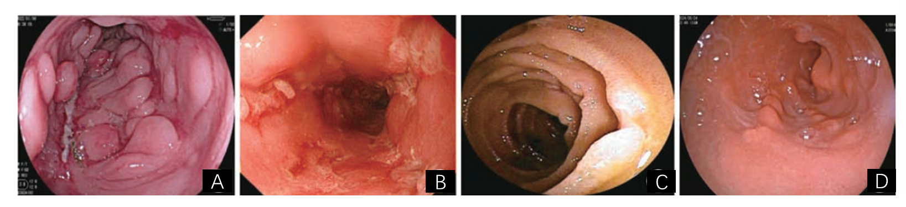
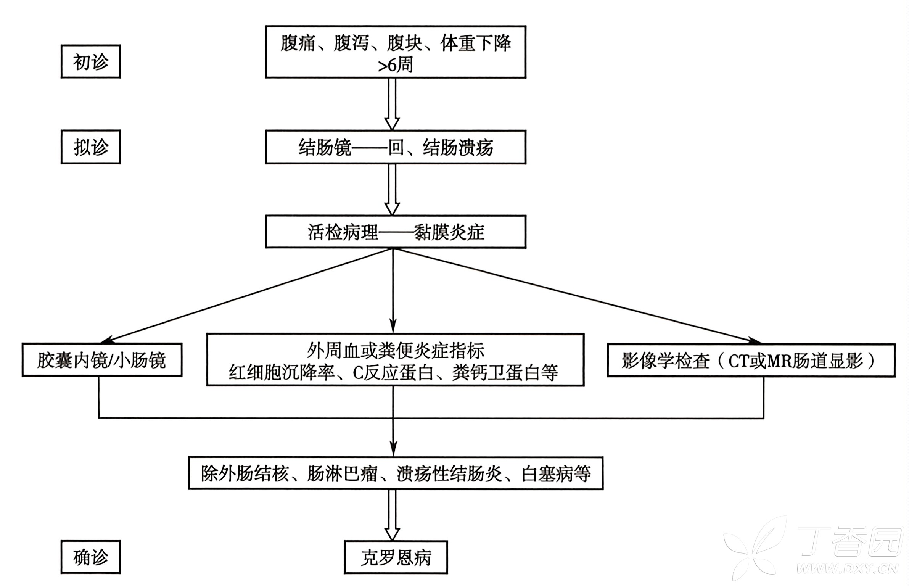
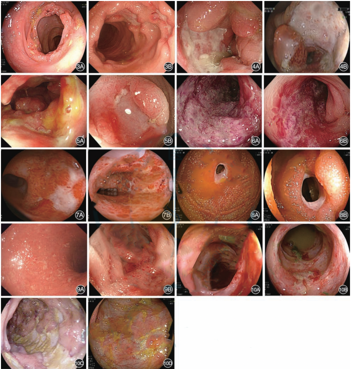
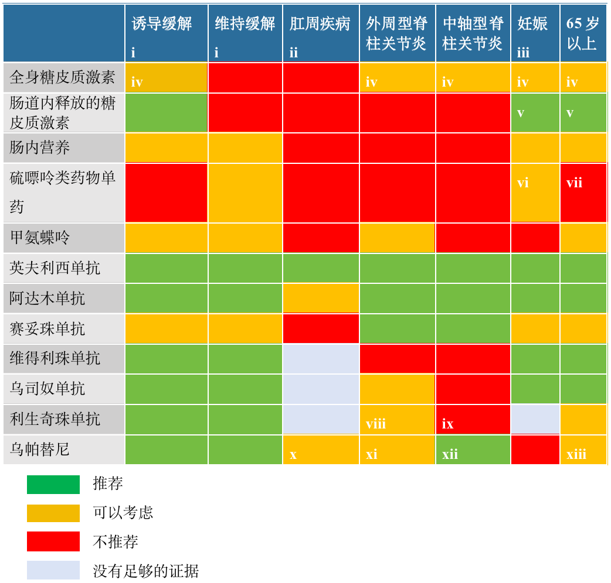

疾病
定义
克罗恩病（Crohn's disease，CD）是一种原因不明的慢性、复发性、进展性炎症性肠病（inflammatory bowel disease，IBD），主要表现为胃肠道慢性非特异性肉芽肿性炎症，可侵及从口腔到肛门消化道的任何部位，以远端小肠和结肠最为多见，常并发肠壁狭窄、瘘管、肛周病变等，并常伴有不同形式的肠外表现。
危险因素
危险因素包括遗传与环境等。
遗传因素
不同种族的人群对 CD 的易感性不同，CD 的发病多有家族聚集现象，双生子患者及同一家族多个患者在患病部位、临床表现，甚至包括肠外表现都存在着高度一致性。这些都说明遗传因素不仅决定着疾病的易感性，同时也决定着疾病的临床特征。
环境因素
口服药物（非甾体类药物、避孕药）、高脂饮食和高蛋白饮食、少果蔬饮食、少母乳喂养史、沙门氏菌和弯曲杆菌感染、抑郁焦虑、工作和生活压力太大等等精神心理因素会增加罹患 CD 的概率。多方面因素共同作用引发肠壁炎症反应加剧，导致局部组织修复与损伤的平衡被破坏，进而诱发肠狭窄或肠瘘的发生[1018]。
吸烟：吸烟与 CD 的关系已经得到证实，吸烟能促进 CD 的发展。烟草中的尼古丁可疑特异性影响 CD 的自噬及增加血凝机制、促进血栓形成等促进 CD 发展。
发病机制
CD 的病因和发病机制尚不完全明确。目前认为，它是一种以肠道损伤为主要表现的系统性疾病，在遗传易感的基础上，由环境因素促发，黏膜免疫系统对肠腔内抗原的异常免疫应答以及肠道微生态紊乱共同参与致病[1010-1012]。
遗传易感性
目前已发现多个同源染色体上的易感基因区，根据发现时间先后，被命名为 IBD1-9。此外，染色体 2、3、7、9 及 X 等区域的 IBD 易感位点也相继被发现。全基因序列的相关研究及荟萃分析已经确定超过 260 个 CD 相关基因风险位点[1013]。研究表明，固有免疫系统对肠腔内诱发因素的反应失调是 CD 发病的关键因素[1014]。
相关基因
NOD2/CARD15 基因
核苷酸结合寡聚化结构域 2（nucleotide oligomerization domain 2，NOD2）是天然免疫中重要的模式识别受体（pattern recognition receptor，PRR）之一，NOD2 突变后防御素的表达水平下降，NF-κB 以及 NF-κB 依赖的促炎介质均减少而导致抗菌能力下降，大量细菌的入侵诱发肠黏膜过度的免疫反应。
30% 以上的高加索人 CD 患者有 NOD2 的基因突变，但中国、日本、韩国等亚洲国家人群中并未发现 NOD2 基因的相关变异，提示 CD 的易感基因可能存在地域及种族的差异。
ATG16 L1 基因和 IRGM 基因
ATG16 L1 是自噬体形成过程中不可缺少的一种蛋白质。ATG16 L1 基因单核苷酸多态性 rs2241880 位点发生 T300A 变异后，阻断了自噬泡转变成自噬体的过程，抵御细菌入侵能力降低，该过程参与 CD 的发生。
IRGM 为调控自噬作用的另一基因，该基因位于 5 号染色体的 p33.1，编码自噬诱导蛋白。IRGM rs1336118 位点多态性与 CD 有较强关联，触发 IRGM 蛋白的异常表达可影响肠组织胞内致病菌的及时清除。
自噬在维持细胞质内环境稳定和细胞自主抵御胞内微生物的过程中起着重要作用，抑制自噬就会导致炎症和组织损伤。但目前研究未发现我国汉族人群 ATG16 L1 和 IRGM 与 CD 的相关性。
IL23R
国外研究利用全基因组关联研究（genome-wide association studies，GWAS）对回肠型 CD 及对照组进行检测，找出 CD 患者 IL23R 的 3 个单核苷酸多态性（single nucleotide polymorphism，SNP）位点 rs11209026、rs2066843 和 rs2076756 显著高于正常对照组。
免疫功能紊乱
效应 T 细胞的活化是肠黏膜免疫及其后续炎症的起点。外周 T 细胞亚群中，已明确 CD4+ T 细胞是导致肠黏膜炎症的主要效应细胞。CD4+ T 细胞获得充分的活化信号后，通过不同的分化途径获得特定生物学功能。由于产生的细胞因子和其生物功能不同，可分为 Th1 和 Th2 细胞 2 个亚群。
Th17 细胞是不同于前两类的另一种 T 辅助细胞，活化后主要分泌 IL-17、IL-21、IL-22 等细胞因子而发挥调控免疫反应的作用。近年来的研究显示，调节性 T 细胞（Treg）在 IBD 的免疫调控方面也起着重要作用。
已有证据表明，IBD 的发生与 Th1/Th2 亚群失衡介导、调节功能的 T 细胞群体 Treg 细胞数量及功能异常的免疫反应异常有关。CD 中肠黏膜的免疫反应由 Th1 和 Th17 型细胞免疫反应主导，免疫系统的异常激活以及免疫耐受性的丧失导致肠道屏障功能受损，免疫细胞对肠道内微生物的异常反应进一步加剧了慢性炎症的进程[1015]。
肠道微生态环境与宿主黏膜防御功能的失衡
低下的自然免疫导致黏膜屏障对肠道细菌的反应不足，微生态失调能促进侵袭性病原微生物的生长，便于细菌通过肠黏膜屏障，引起肠上皮屏障通透性增高。使肠道内源性产生某些产物，如脂多糖、肽聚糖、甲酰甲硫氨酰肽等，作为炎症刺激物激活肠黏膜巨噬细胞、淋巴细胞，释放各种炎症因子，肠腔内的抗原被识别后通过一些抗原呈递细胞的加工、修饰及运输后最终递交给效应炎性细胞，并使其激活，肠道局部免疫稳态被打破，免疫细胞的不恰当激活对不能被识别的自身抗原攻击导致持续的炎症，致 CD 发病。
因而，肠道微生物群在 CD 中同样发挥着关键作用，与健康人群相比，CD 的肠道微生物群特征是微生物多样性下降，这种失衡不仅表现在共生菌种（如大肠杆菌）的毒力增强，还与宿主的遗传易感性和免疫反应密切相关[1016]。
流行病学
发病率及患病率
我国 CD 的发病率及患病率低于欧美国家，同时也低于韩国、日本等其他亚洲国家，估计我国 CD 总体发病率及患病率分别为 1.21/105人和 2.29/105人，大多数分布在我国的北部、东部、南部地区。研究表明我国发病率处于快速上升期[840]。
CD 在欧美国家平均年发病率（3.74-14.6）/105人，患病率（13.7-198.5）/105人，
哥本哈根一项队列研究表明，CD 的发病率为 8.5/10 万人·年，儿童 CD 的发病率为 6.3/10 万人·年。立陶宛 2020 年 CD 患病率为 33/10 万人[527]。
种族
白种人较黑种人、黄种人更易发病。
年龄
中国城镇地区 CD 好发于年轻人，发病高峰年龄为 18~35 岁，男性好发于 30~34 岁（1.75/10 万），女性好发于 25~29 岁（1.42/10 万）[1009]。
西方国家的研究研究显示，CD 发病率呈双峰分布，在 20-30 岁达到第一个高峰，在 60-70 岁达到第二个较小的高峰。
性别
亚洲地区报道并不一致，男性患者发病率更高，男女比例为（1.4-2.9）：1。
根据我国统计资料，在第一发病高峰，CD 患者男性略多于女性，男女比例约为 1.5：1。国外流行病学研究表明，在第二发病高峰，CD 女性患病率更高，我国缺乏第二发病高峰的相应资料。
西方国家多数报道以女性为多，男女比例 1：（1.46-1.6）。
病理学
概述
CD 可侵犯消化道任何部位，但主要侵犯肠道，且多种病理改变合并存在。小肠及结肠同时受累者占 50%～62%，单纯侵犯小肠者占 29.0%～31.7%，结肠单独发病者较少，占 6.6%～19.0%，侵犯其他部位者，西方国家统计占 3.20%，国内统计占 25.24%。
CD 病程缓慢，其病理特征为胃肠道的纵行性溃疡、沟裂、非干酪性肉芽肿性全壁炎、纤维化和淋巴管阻塞。病变呈跳跃式或节段性分布。
CD 诊断最重要的病理特点包括透壁性、节段性分布的慢性炎症，并引起相应肠壁的上皮及间质结构改变、小肉芽肿形成等。
常见黏膜结构改变包括小肠绒毛增粗、变短，隐窝结构改变，小肠幽门腺化生等；
常见间质结构改变包括固有肌层增厚、固有肌层与黏膜肌层融合、广泛纤维组织增生、神经组织增生等。
大体病理
黏膜溃疡：病变早期为细小的针头状或圆形的表浅溃疡，呈匐行性，不连续。较大者边界清楚，基底白色，如鹅口疮样溃疡。进一步发展为狭长而深入肠壁的纵行溃疡，即形成 CD 的一个重要特征——裂沟。
肠管狭窄：局部肠管僵硬、狭窄，短者呈环状狭窄，长者呈管状改变。狭窄部位可单个或多个不等。
肠黏膜的改变：约 1/4 的病例肠黏膜呈铺路石状，系由于纵行溃疡之间相互交错，以及溃疡愈合后瘢痕收缩，使局部凸凹不平，凸出的黏膜下层高度充血、水肿、淋巴组织增生，使黏膜呈结节样隆起如“铺路石”状。
组织病理
节段性全肠壁炎：黏膜层、黏膜下层和浆膜层均有炎性病变，有淋巴细胞聚集，可见生发中心。淋巴细胞聚集的部位与血管和扩张的淋巴管密切相关。浆膜层的淋巴细胞聚集，可形成玫瑰花环，也可见到浆细胞、多核细胞和嗜酸粒细胞。黏膜层可见到隐窝脓肿。
非干酪性肉芽肿：多见于早期 CD 患者。见于 50%～70％的肠段、25％的肠黏膜淋巴结。肉芽肿由上皮样细胞和巨噬细胞组成，中心无干酪性坏死。肉芽肿常很不典型，可见于肠壁全层，尤以黏膜下层和浆膜层最易出现。非干酪样肉芽肿的内镜活检发现率为 15%，外科切除肠段的发现率为 70%，一般取材范围越大，肉芽肿的发现概率越大。
裂沟状溃疡：为刀切状纵行线状裂隙，深达黏膜下层，有时可达浆膜，成为分支状，横断面上，裂隙分支为壁内脓肿。穿透肠壁形成内瘘管和皮肤瘘管。
黏膜下层增宽：系水肿、淋巴管、血管扩张、淋巴细胞聚集、胶原纤维数量增加所致。纤维化可能导致肠壁增厚，有时可伴有黏膜肌的增生，也可能导致肠狭窄，其原因可能与较多的 TGF-β 的产生导致胶原的合成增多有关。
诊断要点：
1、临床表现： ①全身表现：出现发热和营养障碍。② 肠内表现：腹痛为最常见症状，瘘管形成是临床特征之一，大多有腹泻、腹部包块、肛门直肠周围病变等症状。③ 肠外表现：可有全身多个系统的损害，包括骨关节、皮肤、口腔、眼、肝胆系统等。
2、辅助检查： ① 内镜检查：结肠镜为一线检查手段，建议插达回肠末端并多点活检；胶囊内镜适用于结肠镜及小肠放射影像学检查未能明确诊断者，阴性预测值高，但需注意胶囊滞留风险。② 影像学研究：CT 小肠造影（CT enterography，CTE）和磁共振小肠造影（MR enterography，MRE）对小肠疾病的检测敏感性高，MRE 优先用于年轻患者或需序贯检查者；肛周磁共振成像（magnetic resonance imaging，MRI）和内镜超声有助于评估直肠周围病变。③ 实验室检查：贫血、血小板升高常见；C-反应蛋白和红细胞沉降率可用于评估炎症活动，但 40% 轻度炎症患者结果正常。粪便钙卫蛋白和乳铁蛋白是有效的非侵入性标志物。④ 基因检测：NOD2、IL-23R 等基因变异与疾病行为相关，但尚无单一基因变异用于诊断。
3、诊断： ① 综合分析：结合临床表现、实验室、内镜、影像学及组织病理学检查，无单一金标准。② 蒙特利尔分型：根据年龄、病变部位、行为特征及肛周病变分类。③活动度：包括临床疾病活动度和内镜下活动度评分。④并发症：包括瘘管、腹腔脓肿、肠腔狭窄、肠梗阻、肛周病变等，以及消化道大出血、肠穿孔等。
具体诊断流程见图 2。
临床表现
克罗恩病（Crohn's disease，CD）临床表现多样，腹痛、腹泻、体质量下降是最常见的症状，其他重要的临床表现包括乏力、发热、生长发育迟缓、贫血、反复瘘管形成、肛周脓肿或肛瘘及肠外表现[396]。病变可发生在从口腔到肛门的消化道任意节段部位，目前认为回结肠病变占比最高，其次是回肠型和结肠型病变，上消化道病变患病率在逐渐增加。
全身表现
发热
占 5%～40%，与肠道炎症活动和继发感染有关，多为低热或中等热度，可为弛张或间歇热。病变广泛或继发严重感染者，可有高热，并伴有明显的畏寒、多汗、心率增快、虚弱等全身中毒症状。
营养障碍
与慢性腹泻、炎症消耗、摄食减少、吸收面积下降等相关，表现为贫血、低蛋白血症、体重下降和多种维生素及矿物质缺乏（如铁、维生素 B12 和维生素 D）等。
青春期前患者可有生长发育迟滞，青春期延迟。
在病程长的 CD 患者中，当体重减轻与病变其他活动性指标不成比例时，应怀疑合并有癌变可能。
肠内表现
腹痛和腹部不适
腹痛和腹部不适为最常见的症状，可因肠壁炎症、痉挛、粘连和狭窄引起，其部位常与本病的病变部位一致，右下腹痛其病变多位于回盲部或邻近部位，脐周或全腹部，病变多在空肠与横结肠。多数呈慢性间歇性发作，可为隐痛、钝痛，随病期进展多表现为部分性肠梗阻特征，即阵发性绞痛，进餐诱发，休息、排便后减轻。
持续者和明显压痛提示可能因炎症进展、腹膜受累、内瘘、腹腔内脓肿等形成。全腹剧痛和腹肌紧张，可能系急性肠穿孔所致。
腹泻
大多数病例有腹泻，因病变肠段炎症渗出、吸收不良和蠕动增加等引起，多为糊状或水样便，大便次数每天 2~10 次，多无脓血及黏液，间断或持续发作。严重时可见黏液或脓血。
如小肠有广泛病变，可有脂肪泻，如下段结肠及直肠病变的患者排便时可有里急后重感及伴脓血，也可与便秘交替。
夜间腹泻提示疾病活动。
腹部包块
约 1/3 的病例在右下腹及脐周可触及包块。其形成是由肠壁增厚、粘连、肠系膜淋巴结肿大，或因瘘管、脓肿的发生为网膜包裹所致。质地中等，有压痛，粘连且多固定。
瘘管形成
因炎性病变穿壁形成，与肠外组织和器官相通，即形成瘘管。
瘘管形成是 CD 临床特征之一，分为内瘘与外瘘两类，前者是指瘘管通向其他肠段、肠系膜、腹膜后、膀胱、输尿管、阴道等处，后者指通向腹壁或肛周皮肤。肠－肠之间的内瘘可致腹泻加重、营养障碍，外瘘或通向膀胱、阴道的内瘘，可见排粪排气，并继发感染或脓肿形成。
由于本病的发展为慢性过程，在瘘管形成时病变肠段的浆膜常与周围黏膜组织发生粘连，从而减少了急性穿孔可能。
肛门直肠周围病变
约见于半数病例，局部形成脓肿、肛裂、瘘管以及肛周炎症或溃疡等，可为本病的初发或最突出表现，许多患者长期在肛肠或痔瘘科就诊，造成误诊、误治。
其他
可有恶心、呕吐、腹胀、腹鸣、食欲缺乏和消化道出血等。
肠外表现
CD 可有全身多个系统的损害，包括骨关节、皮肤、口腔、眼、肝胆系统等。常见的肠外表现包括 CD 相关关节炎、外周或中轴关节炎、附着点炎、结节性红斑、口腔阿弗他样溃疡、前葡萄膜炎、血栓栓塞症；发生率相对较低的肠外表现包括原发性硬化性胆管炎、自身免疫性肝炎、自身免疫性胰腺炎、坏疽性脓皮病、Sweet 综合征、口腔颌面部肉芽肿病、巩膜炎、非感染性肺炎等[401]。
口腔、皮肤黏膜损害
皮肤表现国外报告约占 15%，国内仅 1.1%。常见者有结节性红斑、荨麻疹、坏疽性脓皮病，少数表现为外周肢体坏疽、皮肤坏死或皮肤多发性动脉炎性结节。
结节性红斑多见于 CD，一般不形成溃疡，部分可自愈，预后良好。
坏疽性脓皮病为最严重的皮肤表现，是一种相对无痛性病变，病程较长，药物治疗可控制症状，但部分患者可反复发作。
口腔黏膜损害为 CD 的相对特征，表现为颊部黏膜及舌侧表面和口腔底部肿胀、结节及溃疡形成，呈线型或阿弗他样溃疡、鹅口疮样溃疡，以阿弗他溃疡多见，活检可见肉芽肿。牙龈可呈弥漫性卡他性炎症，具有充血、乳头水肿、增生、痛痒、器械接触时易出血等特点。口腔病变多呈一过性，与疾病活动性密切相关，随肠道炎症的控制而消失，但可反复发生。
骨关节损害
关节表现国外占 23%，国内 2.05%，累及单关节、多关节、脊柱等。
外周关节炎为少数关节、非对称性、一过性和游走性关节肿痛，复发和消退交替出现，几乎不导致永久性关节损害或畸形。
脊柱炎的发生率为 1.1%～26%，进展缓慢，类似于强直性脊柱炎；典型的症状为早晨或休息后背部和（或）臀部僵硬感，活动之后可使僵硬及伴随的疼痛缓解。体检可见脊柱活动受限，胸廓的扩张减弱。
某些骨关节病变为 CD 的相对特点，例如，杵状指主要见于 CD 小肠广泛受累者，另外，当小肠瘘管蔓延至骨盆上缘和髋关节时，可发生骨盆骨髓炎和化脓性髋关节炎。
由于摄食不足、吸收不良和糖皮质激素的不良反应，可导致骨质疏松及骨软化症。
眼部损害
表现为结膜炎、虹膜炎、巩膜外层炎、巩膜炎、葡萄膜炎及角膜病变等。
其发作与消退与肠炎发作成正比，及时治疗眼部病变可防止视网膜剥离、巩膜炎的视神经水肿、继发于葡萄膜炎的青光眼和白内障等。
肝胆疾病
在炎症性肠病中较常见，可能与自身免疫相关，也有药物不良反应的因素。有肝脏肿大者 3.31%，肝功能异常 0.79%。
部分患者有胆管周围炎，胆管周围炎是一种组织学诊断，指肝门区胆管周围炎症反应和纤维化，可能为原发性硬化性胆管炎向肝内蔓延所致，CD 患者原发性硬化性胆管炎的发生率比溃疡性结肠炎低，表现为渐进性乏力、疼痛、瘙痒和黄疸，被认为是胆管癌的癌前病变。CD 亦可有慢性活动性肝炎、脂肪肝。以上肝脏病变均可进展成肝硬化。
另外，由于脂肪吸收不良，胆盐排泄增加，回肠对胆盐吸收减少，使肝分泌胆盐减少，胆囊中胆盐／胆固醇比例改变，促使胆固醇沉淀，形成胆石，约占 11%。
泌尿系统病变
泌尿系统病变包括肾结石、阻塞性肾积水、肾周脓肿、肾淀粉样变性及尿路瘘管。
肾结石发病率约占 9%，由于腹泻引起脱水，草酸盐吸收增加，高草酸盐尿认为与尿路结石有关，又因肠道大量丢失碱，尿酸从尿中排出增加，导致高尿酸尿及草酸盐结石形成，文献报告胆结石和肾结石更常见于回肠手术后。
血栓栓塞性疾病
由于血浆中第 V、VII、VIII 因子的活性增加和凝血因子 I 增加，加之腹泻脱水，血液高凝状态，血小板形态和功能的异常常引起静脉血栓和栓塞，甚至内脏的血栓形成。最常侵犯下肢和盆腔静脉。
并发症
CD 常见并发症包括瘘管、腹腔脓肿、肠道狭窄、肠梗阻、肛周病变如复杂肛瘘及肛周脓肿，少见但需重视的严重并发症包括消化道大出血、肠穿孔。CD 患者骨代谢异常、静脉血栓风险升高，因此也是并发症评估中需关注的内容。CD 患者并发肠癌风险升高，故需重视癌变的筛查，尤其是在病变广泛、存在肠狭窄、合并原发性硬化性胆管炎、有结直肠癌家族史及多发肠道炎性息肉病史的患者中[429]。
肠梗阻
国内报道发生率为 66%，国外报道发生率为 20%～30%。为 CD 最常见的并发症，也是外科手术最常见的原因，多在小肠发生，常由急性炎症导致的黏膜水肿、炎症后瘢痕狭窄或手术后粘连等引起。若为急性炎症所致则有可能通过药物治疗缓解，如已形成纤维化性狭窄则最终需手术治疗。
瘘管形成
发生率为 20%～40%，国内报道为 9.15%～11.70%，以肠管－肠管瘘、肠管－皮肤瘘多见，后者常见于吻合口瘘。
腹腔脓肿
国外报道发生率为 15%～20%，国内发生率为 2.21 %～7.00%，发生腹膜炎的概率为 3.63%。多形成于肠管之间，或肠管与肠系膜或腹膜之间，少见于实质器官。腹腔脓肿常与炎症活动密切相关，以发热、腹痛为主要表现。脓液培养多为大肠杆菌、肠球菌等革兰氏阴性菌。
消化道出血
便血占 19.09%～25.00%。结肠 CD 的出血机会多于小肠 CD，一般为隐匿性慢性失血。
中毒性巨结肠及穿孔
较溃疡性结肠炎并发中毒性巨结肠少见，以横结肠较易发生，可发生穿孔及中毒性休克。穿孔多见于中毒性结肠炎扩张的严重并发症，由于糖皮质激素的使用，常使得临床症状不典型。
癌变
过去认为 CD 较之溃疡性结肠炎来说，不易引起癌变，现发现此病同样可以癌变。当累及大肠时，发生肠癌的危险度与溃疡性结肠炎相当。肠癌的早期症状如直肠出血，大便习惯改变，在 CD 患者来说，很难引起重视。因此，有必要进行结肠的内镜监测，以早期发现肿瘤。
内镜检查
概述
适应证
对于疑诊 CD 的患者，除非有绝对禁忌证，如肠梗阻和（或）肠穿孔，原则上均应进行全消化道内镜检查[465]。
若患者存在结肠镜、气囊辅助小肠镜和胃镜检查的绝对禁忌证，可考虑以胶囊内镜或影像学检查代替传统的内镜检查。
特殊人群的内镜检查
合并基础疾病的患者
专家共识[465]建议伴有严重心肺脑等重要脏器功能障碍，若实验室检查包括电解质、血浆白蛋白、血红蛋白和凝血功能结果明显异常等因素时，应先行器官支持、营养支持等治疗并稳定生命体征后，择期行全消化道内镜检查明确诊断。
存在检查禁忌证的患者
若存在结肠镜、气囊辅助小肠镜和胃镜检查禁忌证，可以胶囊内镜或者影像学检查代替内镜检查。
老年患者
对于老年患者，完善消化内镜检查时应高度关注高血压、糖尿病，以及心、肺、脑、肾等重要脏器疾病所带来的不良影响，宜在充分评估相关病情后酌情选择消化内镜检查。
妊娠患者
妊娠期进行消化内镜检查可能增加早产风险，但不会增加先天畸形、死产风险[466-467]。由于内镜检查是评估疾病活动情况的重要手段，且妊娠期女性不宜进行放射性相关检查，因此内镜下检查评估尤为重要，在有检查指征时不应拖延或拒绝。
检查前应完善产科会诊评估，需要行内镜检查时，建议尽量于妊娠中期进行。当出现以下情况之一：胎盘早剥、胎膜破裂、临产或子痫未受控制，禁止行消化内镜检查。
妊娠期女性首选胃十二指肠镜、乙状结肠镜检查，必要时可进行全结肠镜检查，尽量避免胶囊内镜检查[468-469]。
检查时应采取左侧卧位，尽量缩短检查时间，可使用最低有效剂量的镇静药物。
妊娠期未满 24 周，可使用超声多普勒胎心仪监测胎心；妊娠期超过 24 周，应在术中全程使用电子胎心监护和监测子宫收缩[470]。
结肠镜检查
中国克罗恩病诊治指南（2023 版）建议[396]，结肠镜应作为常规检查方法用于 CD 诊断、疗效评估及疾病监测。
活检要求
条件允许下，活检部位应涵盖末端回肠、盲肠、升结肠、横结肠、降结肠、乙状结肠、直肠。每个部位需分别取活检组织≥2 块（应同时包含病变部位及非病变部位）。
有条件者可在结肠镜检查时，结合内镜电子染色、放大内镜技术进行靶向活检，必要时选用色素内镜和共聚焦内镜。
内镜下表现
典型的内镜下表现是病变呈跳跃性分布、纵行溃疡、铺路石样或鹅卵石样改变、狭窄或瘘管、肛周病变[465]、回盲瓣受累、变形狭窄等（图 11）。早期的肠道溃疡多为阿弗他样溃疡，随病变进展而逐渐变大变深、融合形成纵行溃疡，旁边黏膜可形成铺路石样改变，病变之间黏膜外观可完全正常。尤其当出现纵行溃疡及铺路石样改变时需高度怀疑 CD，但要充分排除如缺血性肠病、溃疡性结肠炎等疾病。
结肠型 CD
结肠型 CD 的内镜下表现为病变呈跳跃、纵行溃疡，可连续累及数个皱襞、炎性肉芽增生[471]；
早期 CD 的肠道溃疡多为阿弗他样溃疡，随着病变进展而逐渐变大变深，后渐融合为纵行溃疡；
病变反复时肠黏膜上皮呈铺路石样或鹅卵石样改变，病变之间黏膜外观可完全正常；
愈合期病变肠道可有炎性息肉和溃疡瘢痕，肠腔可狭窄[472]。
肛周 CD
内镜下表现为为组织破坏（皮赘、溃疡、肛裂）、瘘管与脓肿（肛瘘、直肠阴道瘘、肛周脓肿）及肛管直肠狭窄[473]。
小肠型 CD
60%~80% 的 CD 患者存在小肠受累，其中约 30% 的 CD 患者仅存在小肠病变，尤其是末端回肠[471]。
小肠型 CD 的内镜下表现为病变呈偏侧跳跃、纵行溃疡，可连续累及数个皱襞、炎性肉芽增生；早期 CD 溃疡形态以不规则溃疡和线性溃疡常见；有 1/3 的患者小肠黏膜呈鹅卵石样外观，具有诊断意义。与结肠型 CD 典型的纵行溃疡不同，小肠型 CD 溃疡的排列形态可呈现多样化，可表现典型纵行排列，也可表现环行或跳跃性线性排列[474-475]。

胃十二指肠镜检查
中国克罗恩病诊治指南建议[396]拟诊 CD 患者应常规行胃十二指肠镜检查及病理活检，明确炎症有无累及上消化道，尤其是有上消化道症状、儿童和 IBD 类型待定（inflammatory bowel disease unclassified，IBDU）患者[1024]。
多数上消化道受累的 CD 患者同时存在小肠及结肠病变，孤立胃、十二指肠病变的 CD 相对罕见，发生率不足 2%[410]。因此，对于拟诊 CD 患者应开展常规胃十二指肠镜筛查，不应因患者已通过结肠镜等明确诊断而忽略上消化道病变评估，尤其是儿童、存在上消化道症状以及 IBD 待定型的患者群体[411]。
活检要求
CD 的首次胃十二指肠镜评估也建议多点活检，活检部位包括食管、胃体、胃窦、十二指肠等，建议每个部位至少取 2 块组织，在内镜所见炎症黏膜处取活检，有条件者建议对内镜无炎症黏膜也进行活检[412]。
内镜下表现
非特异性表现包括充血、水肿、糜烂和浅溃疡；相对特异性表现包括黏膜结节、形态不规则溃疡（口疮性/线形）伴周边炎性息肉样增生、胃窦增厚、十二指肠狭窄、以及胃底部及十二指肠球降部条状竹节样改变[63]。组织学可见肉芽肿性炎症、十二指肠局灶性隐窝炎和局灶性增强性胃炎[60]。
胶囊内镜检查
适应证
胶囊内镜检查（video capsule endoscopy，VCE）主要用于疑诊 CD，但结肠镜及小肠放射影像学检查未能明确诊断者[396]。
检查前评估有无肠道狭窄
当患者出现急性腹膜炎、肠穿孔、肠梗阻时，禁止行胶囊内镜检查[465]。有梗阻性症状的患者，应在胶囊内镜检查前进行小肠显像和/或通畅胶囊评估，以降低胶囊滞留的风险。
对于可疑肠道狭窄或肠梗阻的患者，进行胶囊内镜检查前需要完善影像学检查，如 CT 小肠造影（CT enterography，CTE）和磁共振小肠造影（MR enterography，MRE）以评估肠道通畅性，充分评估出现胶囊滞留的风险。若评估结果包括≥2 段狭窄前扩张、狭窄长度≥10 mm、其中一段狭窄前扩张≥3 cm、巨大肿瘤及 CTE 或 MRE 提示多发狭窄，胶囊内镜滞留的风险将会提高，可以选择适当延后胶囊内镜检查，必要时使用探路胶囊评估小肠功能通畅[465]。
胶囊内镜用于诊断 CD 的阴性预测值可达到 96%[415]。检查阴性倾向于排除 CD，阳性结果需综合分析并常需进一步检查证实[1025]。胶囊内镜对小肠黏膜病变的探测非常敏感，一项 Meta 分析发现，胶囊内镜检查效果优于小肠钡剂检查和回肠结肠镜检查[414]。因此，当小肠放射影像学检查阴性但仍怀疑 CD 时，建议进一步行胶囊内镜评估。
小肠镜检查
60%~80% 的 CD 患者存在小肠受累，约 30% 仅存在小肠病变（尤其是末端回肠）[471]。双气囊小肠镜在疑似 CD 患者中的诊断率高达 80%[73-76]，比多重放射影像技术更敏感[77]。
适应证
CTE/MRE/小肠胶囊内镜检查怀疑而结肠镜检查无法确诊 CD 者，可行气囊辅助的小肠镜检查行黏膜活检[396]。
进镜路径选择
病变位于近端小肠者，选择经口小肠内镜；病变位于远端小肠者，选择经肛小肠内镜；如无影像检查提示病变部位，首选经肛小肠镜。
内镜下表现
小肠型 CD 病变呈偏侧跳跃、纵行溃疡，可连续累及数个皱襞并伴炎性肉芽增生。早期溃疡多呈不规则或线性；溃疡排列多样（纵行、环行或跳跃线性）[474-475]。约 1/3 患者呈现具有诊断意义的“鹅卵石样”外观。
染色内镜检查
CD 结肠炎的癌变风险随病程和炎症程度增加而增加，必要时可行染色内镜检查监测癌变风险。
适应证
患病≥8 年且>30% 结肠受累的患者，或确诊为原发性硬化性胆管炎的患者（无论疾病分布如何）[78]，建议使用染色内镜。
影像学检查
小肠病变的评估
CD 累及小肠概率较高，结肠镜无法观察到除末端回肠以外的小肠病变[416]，且肠瘘、狭窄等并发症也难以通过内镜进行评估。
首选影像学检查：拟诊或新诊断的 CD 患者行磁共振小肠造影（MRE）或 CT 小肠造影（CTE）检查[396]，以评估病变范围及肠瘘、狭窄等肠内/肠外并发症[417]。两者对 CD 小肠病变的诊断准确度相似。
次选影像学检查：小肠钡剂造影的敏感性较低，仅在 CTE 或 MRE 不可及的情况下作为次选。
典型影像学特征：肠壁增厚、肠黏膜强化伴肠壁分层改变；肠系膜血管增多、扩张扭曲呈“梳样征”；以及肠系膜脂肪爬行等。
肛周病变的评估
至少 25% 的 CD 患者存在肛瘘，这是疾病进展的重要危险因素。准确评估肛瘘（是否存在、类型、是否合并脓肿、与周围组织的关系）直接影响后续治疗方案的选择，尤其是在决定是否启动抗肿瘤坏死因子（tumor necrosis factor，TNF）治疗时[419-421]。
首选影像学检查：肛周磁共振检查（MRI）是 CD 肛瘘诊断的首选方法，应作为疑诊 CD 及合并肛周病变患者的常规检查项目[396]。
替代与联合检查：肛周超声检查可作为肛周 MRI 的替代选择。前瞻性研究显示，MRI 诊断肛瘘的敏感性为 87%，经直肠超声为 91%，麻醉下直肠探查为 91%；若结合上述任意两种检查，肛瘘检出率可达 100%[422]。
腹腔内脓肿的评估
如果怀疑腹腔内脓肿，应进行腹部和骨盆横断面影像。
具体影像学技术
CT 小肠造影（CTE）
适应证
对于疑似 CD 患者，CTE 常为初始方法。美国腹部放射学会和美国胃肠病学会建议，符合未接受过横断面肠造影检查；急性病或疑似脓毒症；有 MRI 相关禁忌证或潜在安全性问题者，可使用 CTE 检查。
优点
研究报告，CTE 检测 CD 相关病变的灵敏度高达 90%[65,93]，与 MRE 相当。
特征性表现
CTE 的特征如出现粘膜强化、肠系膜血管增生和肠系膜脂肪爬行增生，都提示有活动性炎症[95]。
应用
CT 可用于指导术前脓肿引流，从而降低术后并发症的发生率[108]。
磁共振小肠造影（MRE）
MRE 与 CTE 具有相似的敏感性，表现为肠壁强化、粘膜病变，提示肠道炎症[96]。
适应证
对于年轻患者（<35 岁）和可能需要进行连续检查的患者，建议优先使用 MRE 检查。
如果怀疑腹腔内脓肿，应进行腹部和盆腔的 CTE/MRE 检查。
疑诊 CD 及合并肛周病变患者应常规检查肛周 MRE。
肛周磁共振和内镜超声
肛周 MRI 横断面影像和/或内镜超声可用于进一步描述肛周 CD 和直肠周围脓肿。研究表明，内镜超声诊断肛周瘘管病的准确率超过 90%[103]。连续内镜下超声检查可以帮助指导肛周克罗恩瘘管病患者的治疗干预，包括挂线切除和停止药物治疗[104-105]。
经腹肠道超声
应用
指南建议[396]肠道超声作为 CD 患者初始评估的补充选择，应用于肠道病变范围和并发症的评估以及长期随访的疗效监测。
也可作为 CD 临床缓解患者的疾病评估工具，用于 CD 疾病复发和进展的风险分层[1033]。
优点
经腹肠道超声可快速直观地评估肠道厚度、肠壁血流信号以及肠道动力，探查范围囊括除直肠和部分近端空肠外的所有肠道[423]，可以显示肠壁病变的部位和范围、肠腔狭窄、肠瘘及脓肿等，并且对小肠狭窄、肠瘘等并发症的评估有较好的敏感性与特异性[424]。对疑诊 CD 者，肠道超声对病变检出的敏感性、特异性分别为 79.7% 及 96.7%，而对确诊 CD 患者病变检出的敏感性和特异性则为 89% 及 94.3%[423]。
前瞻性队列研究发现，治疗后 CD 患者肠道炎症的改善可通过肠道超声各项参数如肠壁厚度、血流信号及纤维脂肪增生充分显示[425]，并且与结肠镜评价的疾病活动度有较好的一致性[426]。治疗后早期超声的改善可作为长期疾病应答的预测指标[427]。
相较于 CTE 及 MRE，肠道超声具有无辐射、无创、快捷、患者接受度高等优点，但肠道超声的敏感性及特异性低于 CTE 或 MRE[428]。
CD 的主要超声表现
肠壁节段性增厚（结肠壁厚≥4 mm，小肠壁厚≥3 mm）；
正常肠壁层次结构模糊或消失；
肠壁血流信号较正常增多，透壁炎症时可见周围脂肪层回声增强（即脂肪爬行征）。
其他包括深溃疡形成、黏膜下层的强回声线连续性中断、受累肠管僵硬、肠蠕动改变、结肠袋消失；内瘘、窦道、脓肿形成；肠系膜淋巴结肿大和腹腔积液等。
实验室检查
实验室检查主要包括炎性指标及营养状态评估，如血常规、C 反应蛋白（C-reactive protein，CRP）、红细胞沉降率（erythrocyte sedimentation Rate，ESR）、白蛋白等。若检测条件允许，建议行粪便钙卫蛋白（fecal calprotectin，FC）检查。
粪便钙卫蛋白浓度
钙卫蛋白（Fecal calprotectin，FC）是由中性粒细胞和巨噬细胞分泌的一种钙结合蛋白，随粪排出即为钙卫蛋白，具有肠道炎症特异性，同时具有稳定、均匀、检测非侵入和易检的特性。能直接反映肠道黏膜炎症活动，相较于血清标志物［如 C 反应蛋白（C-reactive protein，CRP）、红细胞沉降率］，更少受全身性炎症或肠外因素干扰[1081-1083]。因其避免内镜的侵入性风险，尤其适用于儿童、孕妇及不耐受内镜的患者[1081,1084]。
具体应用
钙卫蛋白可用于 IBD 患者疾病活动的评估，钙卫蛋白水平升高提示 IBD 疾病活动和（或）加重。
钙卫蛋白可用于鉴别肠易激综合征等功能性肠道疾病[1097-1099]。
钙卫蛋白可用于评估内镜下黏膜愈合，参考界值为钙卫蛋白<100 μg/g 或<150 μg/g。在无法行内镜检查时，钙卫蛋白可作为黏膜愈合的替代指标。
动态监测钙卫蛋白水平可用于评估或预测治疗应答。当治疗有效时，钙卫蛋白水平随着肠道炎症的消退而降低，治疗后钙卫蛋白的持续降低意味着有效的治疗和肠道炎症的缓解，通过检测钙卫蛋白水平可初步判断 IBD 患者对生物制剂或者小分子制剂的反应效果。
动态监测钙卫蛋白水平可用于预测缓解期 IBD 患者疾病复发以及 CD 患者术后复发。
预测缓解期 IBD 患者疾病复发
在临床缓解的 IBD 患者中，钙卫蛋白高者较钙卫蛋白低者早期复发的风险更高，并且 IBD 患者在临床复发前会出现钙卫蛋白水平升高的情况[1164,1166-1167]。
对于钙卫蛋白>250 μg/g 的患者，未来数月内复发风险较高，建议考虑进一步评估（如内镜或 MRI）并优化或改变治疗策略[1128,1160,1169]。
预测 CD 患者术后复发
2023 年美国胃肠病协会（American Gastroenterological Association，AGA）指南中，对于有一个或多个复发风险因素但正在进行术后药物预防的 CD 患者，建议使用钙卫蛋白<50 μg/g 为界值监测以避免常规的内镜评估疾病活动度，而在基线复发风险低且接受术后药物预防的患者中，钙卫蛋白<150 μg/g 也能排除内镜复发[1170]。
监测频率
建议钙卫蛋白监测在 IBD 活动期每 3~6 个月进行 1 次，缓解期每 6~12 个月进行 1 次。
采样规范
粪便采集宜在晨起首次排便时，后续随诊监测应保持相同时段采样。不建议常规连续两日采集粪便进行钙卫蛋白检测。采集粪便应选取性状相对正常的成形粪便，避免取样粪便太稀或太硬。采集的粪便应置于专用的清洁容器中，不加添加剂，避免任何意外污染。
粪便储存室温下应在 3 d 内，最多可 1 周。如果无法在 3 d 内测定钙卫蛋白，粪便应冷冻储存（−20°C 或以下）[1253]。
注意事项
钙卫蛋白分析时需要考虑检测方法、患者年龄、用药及合并其他疾病等影响因素。
检测方法
不同定量检测方法的结果差异较大，因此不能互换比较。不同的检测方法之间存在高达 5 倍的定量差异[1253]。
年龄
儿童：1 岁以下儿童的 FC 水平生理性偏高，可达 50~250 μg/g，10 岁以上儿童逐渐接近成人水平；
老年人因衰老和肠道稳态失调，FC 值亦存在生理性增加[1088]。
合并疾病
非 IBD 的胃肠道疾病（如肠易激综合征、结肠息肉、结肠憩室病、结肠癌、胃肠道出血、胃肠道感染、显微镜下结肠炎、放射性直肠炎、储袋炎）、风湿性疾病及肝硬化患者的钙卫蛋白水平会升高。
药物
非甾体抗炎药（NSAIDs）者钙卫蛋白水平高达 520 μg/g，质子泵抑制剂（PPI）使用者钙卫蛋白水平高达 150 μg/g。
其他影响因素
包括肥胖、缺乏运动、肛周病变、造口存在及肠道准备等可升高钙卫蛋白水平。
血常规
提示不同程度的贫血，与失血、慢性炎症有关的骨髓抑制、铁、叶酸和维生素 B12 等吸收减少、某些药物所致的骨髓抑制相关。
炎症活动和（或）合并感染时可引起白细胞计数增高，以中性粒细胞增高为主。中性粒细胞/淋巴细胞比值升高提示系统性炎症反应，阈值在 2.2~2.4 区间具有较好的鉴别价值[1253]。
红细胞分布宽度>14.5% 需警惕疾病活动期[1253]。
在 CD 患者中可观察到血小板计数增高与 CD 活动指数相关。当血小板持续>300×10⁹/L 且平均血小板体积<10 fl 时，高度提示机体存在高炎症状态及继发性高凝风险（血栓形成风险），此时建议进一步监测凝血功能等）[1253]。
粪便检查
可证实肠道炎症存在，大便稀薄、水样便或脓血便，大便常规可见黏液、红细胞、白细胞、脓细胞及未消化食物，潜血阳性。
粪便常规检查感染性病因所致的肠炎与 CD 有时难以区分，为此，应该常规行病原学或血清学检查，须连续 3 次以上。对于近期有住院或有应用抗生素史者，有条件应进行艰难梭菌检查，以排除假膜性肠炎可能。
另外须行溶组织阿米巴滋养体检查、粪便集卵、病毒学检查以排除寄生虫、病毒感染。
免疫法粪便隐血试验联合 FC 是目前肠道病变无创筛查的最优组合之一[1253]。
ESR、CRP
ESR 和 CRP 是反映急性炎症反应的实验室指标。CRP 与 CD 病变的活动性密切相关，且其半衰期较短（19 小时），能反映炎症活动的动态变化。ESR 反映疾病严重程度的精确性稍逊于 CRP，其对结肠病变的灵敏度优于回肠。
其他检查
巨细胞病毒（cytomegalovirus，CMV）、EB 病毒（EpsteinBarrvirus，EBV）、结核菌素试验（purified protein derivative，PPD）和 γ-干扰素释放试验（interferon gamma release assay，IGRA）检测等，用于鉴别诊断。
特异性自身抗体
血清抗酿酒酵母抗体（Anti-Saccharomyces cerevisiae antibody，ASCA）和核周型抗中性粒细胞胞浆抗体（perinuclear anti-neutrophil cytoplasmic antibody，pANCA）主要用于鉴别 CD 与溃疡性结肠炎。ASCA 阳性合并 pANCA 阴性高度支持 CD 的诊断。此外，ASCA 阳性的 CD 患者更易出现回肠受累和肠道狭窄的穿透性病变[1289-1291]。
细胞因子
白介素-6（Interleukin-6，IL-6）（升高早于 CRP，可作早期预警）、肿瘤坏死因子-α（Tumor Necrosis Factor-α，TNF-α）（升高提示穿透性病变风险）、白介素-17（Interleukin-17，IL-17）/ 白介素-23（Interleukin-23，IL-23）（提示可能进展为狭窄 / 穿透型）等，对预测疾病表型进展有重要价值[1284,1289-1291]。
血清淀粉样蛋白 A
对于 CRP 水平偏低但仍存在活动性炎症的 IBD 患者，血清淀粉样蛋白 A 可作为一项重要的辅助生物标志物，尤其有助于识别对 CRP 不敏感或处于轻中度炎症活动的病例[1253]。
在传统诊断方法存疑时（如内镜阴性但症状持续、需鉴别感染与炎症活动或评估难治性病例）可考虑应用新型诊断指标及技术。16S rRNA 测序和 mNGS 有助于揭示菌群失调、识别传统培养阴性的机会致病菌及耐药基因；miRNA 谱分析在鉴别 IBD 与 IBS、区分溃疡性结肠炎与 CD、以及预测并发症和治疗反应方面展现出潜力[1253]。
基因检测
在 CD 中，某些基因变异与不同的表型表达相关，但目前基因检测仍只是一种研究工具，尚不能作为独立诊断标准[824]，在特定情况下具有重要的辅助价值。
HLA-DQA1*05、HLA-DRB1*03、核苷酸水解酶 15（nucleoside diphophate 15，NUDT15）和硫嘌呤甲基转移酶（thiopurine methyltransferase，TPMT）四种基因变异，可影响治疗反应，并识别出 CD 患者药物治疗不良反应的潜在风险，建议部分患者选择性检查[824]。使用硫唑嘌呤或 6-巯嘌呤（mercaptopurine，6-MP）时，需检测 HLA-DRB1*03（肝毒性风险高）、TPMT（骨髓抑制风险高）和 NUDT15（骨髓抑制风险高）；使用抗肿瘤坏死因子（tumor necrosis factor，TNF）抗体前，需检测 HLA-DQA1*05（抗药抗体风险高）。
NOD2 和 IL23R 变异在东亚人群中非常罕见[43]。NOD2 变异是更复杂疾病行为的预测因子，包括回肠受累、狭窄和穿透性疾病行为以及手术需求[48]。这些变异也与疾病的早期发病有关[49]。IL-12B 变异与早期手术的需要相关[50]。基因检测目前主要用于高风险人群筛查；难治性 CD 的机制探讨；个体化用药指导。最终，我们可能利用基因检测来描述患者的疾病行为并指导早期治疗。
基因检测能否用于 CD 的诊断？患者是否需要进行基因检测呢？
基因检测无法应用于 CD 的诊断，但 HLA-DQA1*05、HLA-DRB1*03、核苷酸水解酶 15（NUDT15）和硫嘌呤甲基转移酶（TPMT）这四种基因变异，可预测药物疗效、识别严重药物不良反应风险，指导个性化用药策略，故可选择性进行检测。
- 使用硫唑嘌呤或 6-MP 时，需检测 HLA-DRB1*03（肝毒性风险高）、TPMT（骨髓抑制风险高）和 NUDT15（骨髓抑制风险高）；
- 使用抗 TNF 抗体前，需检测 HLA-DQA1*05（抗药抗体风险高）。
诊断
CD 诊断缺乏金标准，需要基于临床表现、实验室检查、影像学检查、内镜和病理组织学检查综合诊断，同时排除其他原因引起的肠道炎症或损伤，如肠结核、肠白塞病及淋巴瘤等。
临床疑诊：在排除其他疾病的基础上，具备上述典型临床表现；
临床拟诊：在临床疑诊基础上，同时具备结肠镜或小肠镜特征以及影像学特征者；
临床诊断：在临床拟诊基础上，加上病理活检提示 CD 的特征性改变且能排除肠结核；
临床确诊：临床诊断+随访 6~12 个月以上，根据对治疗的反应及病情变化判断，符合 CD 自然病程；
病理确诊：手术切除标本（包括切除肠段及病变附近淋巴结）符合诊断标准。可参考世界卫生组织的 CD 诊断标准（表 10）[1034]。
详细诊断流程见图 2。
| 项目 | 临床表现 | 放射影像学检查 | 内镜检查 | 活组织检查 | 手术标本 |
| ①非连续性或节段性改变 | — | + | + | — | + |
| ②卵石样外观或纵行溃疡 | — | + | + | — | + |
| ③全壁性炎性反应改变 | + | + | — | + | + |
| ④非干酪性肉芽肿 | — | — | — | + | + |
| ⑤裂沟、瘘管 | + | + | — | — | + |
| ⑥肛周病变 | + | — | — | — | — |

病情评估
临床类型
临床类型推荐参照蒙特利尔 CD 表型分类法[1035]。
发病年龄：A1 指发病年龄≤16 岁，A2 指发病年龄 17~40 岁，A3 指发病年龄>40 岁。
病变部位：L1（回肠末端），L2（结肠），L3（回结肠），L4（累及上消化道）。
疾病行为：B1（非狭窄/非穿透），B2（狭窄）和 B3（穿透）。如果存在肛周病变，则附加字母 “p”。见 表 12。
| 项目 | 标准 | 备注 | |
| 确诊年龄（A） | A1 | ≤16 岁 | - |
| A2 | 17~40 岁 | - | |
| A3 | >40 岁 | - | |
| 病变部位（L） | L1 | 回肠末端 | L1+L41） |
| L2 | 结肠 | L2+L41） | |
| L3 | 回结肠 | L3+L41） | |
| L4 | 累及上消化道 | - | |
| 疾病行为（B） | B12） | 非狭窄/非穿透 | B1p3） |
| B2 | 狭窄 | B2p3） | |
| B3 | 穿透 | B3p3） | |
活动度
CD 疾病活动度主要分为临床疾病活动度及内镜下疾病活动度，目前没有用于评价疾病活动度的金标准。
临床疾病活动度评分
常用的临床疾病活动度评分主要指 CD 活动指数（Crohn's Disease Activity Index，CDAI），以及在此基础上衍生出简单易操作的评分，包括简化 CDAI 评分（表 2）及 Best CDAI 评分（表 3）[396]。
CD 活动指数（CDAI）
临床缓解（CDAI<150 分）
这些患者没有疾病症状，也没有炎症后遗症的症状。这个状态可以是自发获得的，也可以是在内科或外科干预后获得。需使用糖皮质激素维持的患者不视为病情缓解，而是称为糖皮质激素依赖。
轻度 CD（CDAI 为 150-220 分）
这些患者通常是门诊患者，可以经口进食，体重减轻<10%，没有全身性疾病的症状，如发热、心动过速和腹部压痛，也没有肠梗阻的症状和体征。
中至重度 CD（CDAI 为 220-450 分）
包括轻至中度 CD 治疗失败的患者，或存在如发热、体重减轻、腹痛和腹部压痛、间歇性恶心或呕吐、贫血等突出症状的患者。
重度-暴发性 CD（CDAI>450 分）
包括使用糖皮质激素或生物制剂（英夫利西单抗、阿达木单抗、塞妥珠单抗、那他珠单抗、维多珠单抗或优特克单抗）后仍有持续症状的门诊患者，或表现出高热、持续性呕吐、肠梗阻、腹膜征、恶病质或脓肿证据的个体。
简化 CDAI 评分
项目 | 0 分 | 1 分 | 2 分 | 3 分 | 4 分 |
|---|---|---|---|---|---|
一般情况 | 良好 | 稍差 | 差 | 不良 | 极差 |
腹痛 | 无 | 轻 | 中 | 重 | - |
腹部包块 | 无 | 可疑 | 确定 | 伴触痛 | - |
腹泻 | 稀便每日 1 次记 1 分 | ||||
肠外表现/并发症a | 每种记 1 分 | ||||
Best CDAI 评分
变量 | 权重 |
|---|---|
稀便次数（1 周） | 2 |
腹痛程度（1 周总评，0~3 分） | 5 |
一般情况（1 周总评，0~4 分） | 7 |
肠外表现与并发症（1 项 1 分）a | 20 |
阿片类止泻药使用（0、1 分） | 30 |
腹部包块（无包块 0 分，可疑 2 分，肯定 5 分） | 10 |
血细胞比容降低（正常：男 0.40，女 0.37） | 6 |
100×（1-体质量/标准体质量） | 1 |
内镜下活动度评分
结肠镜下活动度评分
常用的内镜疾病活动度评价方法包括克罗恩病内镜严重程度指数（crohn's disease endoscopic index of severity，CDEIS）（表 4）、简化克罗恩病内镜下评分（simple endoscopic score for crohn's disease，SES⁃CD）（表 13）和 Rutgeerts 评分（表 6）。其中，Rutgeerts 评分用于 CD 术后复发的评估[476]，CDEIS 和 SES-CD 评分均存在判断的主观性问题，且计算过程均相对繁琐，可用于作为临床研究的观察指标。
CDEIS 评分
总分最高为 44 分，内镜下黏膜愈合通常定义为≤4 分[477]。由于计算过程复杂，一般用于科研。
SES‑CD 评分
是由 CDEIS 简化而来，评估了包括回肠末端在内 5 个肠段的溃疡大小、溃疡面积、非溃疡面积以及狭窄情况，在临床上最为常用。内镜缓解或黏膜愈合定义为 SES‑CD≤2 分，轻度内镜活动定义为 SES‑CD 3~6 分，中度内镜活动定义为 SES‑CD 7~15 分，重度内镜活动定义为 SES‑CD>15 分[477]。
Rutgeerts 评分
针对回结肠切除术后的患者，利用结肠镜评估回肠末端和吻合口之间的病变。炎症性肠病治疗目标选择（selecting therapeutic targets in inflammatory bowel disease，STRIDE）共识Ⅱ推荐内镜缓解定义为 Rutgeerts 评分≤i1 分，i2 分及以上可认为内镜下复发[478]。
评分项目 | 直肠 | 左半结肠 | 横结肠 | 右半结肠 | 回肠末端 | 总和 |
|---|---|---|---|---|---|---|
深溃疡 （0~12 分） | 总和 1 | |||||
浅表溃疡（0~6 分） | 总和 2 | |||||
每 10 cm 肠段中表面受累肠段平均长度（0~10 cm） | 总和 3 | |||||
每 10 cm 肠段中溃疡累及肠段平均长度（0~10 cm） | 总和 4 |
| 变量 | 0 分 | 1 分 | 2 分 | 3 分 |
| 溃疡大小 | 无 | 阿弗他溃疡（直径 0.1~0.5 cm） | 较大溃疡（直径 0.5~2 cm） | 巨大溃疡（直径>2 cm） |
| 溃疡表面范围 | 无 | <10% | 10%~30% | >30% |
| 肠段受累范围 | 无 | <50% | 50%~75% | >75% |
| 狭窄 | 无 | 单发，内镜可通过 | 多发，内镜可通过 | 内镜无法通过 |
评分 | 内容 |
|---|---|
i0 | 无病变 |
i1 | ≤5 处阿弗他样溃疡 |
i2 | >5 处阿弗他样溃疡，病变间黏膜正常；或跳跃性较大病变；或局限于回结肠吻合口溃疡（<1 cm） |
i3 | 广泛的阿弗他样溃疡伴广泛的炎性黏膜 |
i4 | 广泛的末端回肠炎症伴较大溃疡、结节和（或）狭窄 |
胶囊内镜下活动度评估
胶囊内镜 CD 活动指数（capsule endoscopy Crohn disease active index，CECDAI）[479]（表 7）和 Lewis 评分（Lewis score，LS）[480]（表 8）可用于评估胶囊内镜下小肠疾病活动度[481]。两种评分系统均纳入溃疡、狭窄等量化参数，存在较好的关联性[482-483]。
CECDAI 评分
可评估小肠近段和远段的 3 个参数：炎症、病变范围和狭窄情况。
根据胶囊内镜在小肠内停留的时间，即从进入十二指肠的时间和到达盲肠的时间（如果胶囊未到达盲肠，则以最后 1 张图片的时间为准），将全小肠均分为近段小肠和远段小肠，再对 2 段小肠分别记录黏膜炎症（A）、病变范围（B）和狭窄情况（C）的分值，总分=（A1×B1+C1）+（A2×B2+C2）。
因无明确的分期标准，故按 CECDAI 值的 33.3%，66.6% 为分割点进行上、中、下三分位数区间分组[484-485]。
Lewis 评分
Lewis 评分是一种基于绒毛水肿及溃疡病变数目、病变长度和病变分布的评分系统[480]。
它将小肠平分成 3 段区域，每段小肠分别记录绒毛水肿及溃疡的病变数目、病变长度和病变分布，总分=绒毛水肿数目评分×病变长度评分×病变分布类型评分+溃疡数目评分×病变长度评分×病变分布类型评分（取 3 段中最严重肠段）+全肠段肠腔狭窄的病变数 目评分×是否形成溃疡评分×内镜能否通过评分。≤135 分时诊断为正常或无临床意义的小肠黏膜炎性反应；>135~<790 分时诊断为轻度黏膜炎性反应；≥790 分时诊断为中重度黏膜炎性反应改变[486]。
评分项目 | 近段 小肠 | 远段 小肠 |
|---|---|---|
A.炎症 | ||
0 分=无 | ||
1 分=轻度至中度水肿/充血/黏膜缺损 | ||
2 分=严重水肿/充血/黏膜缺损 | ||
3 分=出血、渗出、口疮、糜烂、小溃疡（<0.5 cm） | ||
4 分=中溃疡（0.5~2 cm），假性息肉 | ||
5 分=大溃疡（>2 cm） | ||
B.病变范围 | ||
0 分=无 | ||
1 分=1 处病变 | ||
2 分=2~3 处病变 | ||
3 分=>3 处病变 | ||
C.狭窄情况 | ||
0 分=无狭窄 | ||
1 分=1 处狭窄，胶囊内镜可通过 | ||
2 分=多处狭窄，胶囊内镜可通过 | ||
3 分=胶囊内镜无法通过 |
损害表现 | 数目 | 评分（分） | 病变长度C | 评分（分） | 病变分布类型 | 评分（分） |
|---|---|---|---|---|---|---|
绒毛水肿 | 无 | 0 | 短段 | 8 | 单发 | 1 |
有 | 1 | 长段 | 12 | 散在 | 14 | |
整个肠段 | 20 | 弥散 | 17 | |||
溃疡a | 无 | 0 | 短段 | 5 | 占周径<1/4 | 9 |
单发 | 3 | 长段 | 10 | 占周径 1/4~1/2 | 12 | |
少数 | 5 | 整个肠段 | 15 | 占周径>1/2 | 18 | |
多发 | 10 | |||||
狭窄b | 无 | 0 | 未形成溃疡 | 2 | 胶囊内镜可以通过 | 7 |
单发 | 14 | 形成溃疡 | 24 | 胶囊内镜无法通过 | 10 | |
多发 | 20 |
危险因素评估
高危因素
指南建议确诊 CD 后需进行高危因素评估，CD 进展的高危因素包括发病年龄小、吸烟、肠道受累范围广、穿透性或狭窄性疾病表型、肛周病变[396]。
CD 的临床表现、疾病严重程度存在异质性，约 56%~81% 的患者在初始诊断时为非狭窄非穿透型，这一部分患者中约 51% 在诊断后 20 年内疾病进展出现狭窄或穿透型病变；另有 5%~25% 的患者在诊断时就出现狭窄或肠瘘等并发症。仅约 20%~30% 的患者可维持长期疾病不进展的状态，因此需识别出存在疾病进展高危因素的患者群体，以指导治疗决策及慢性病管理[430]。
危险度
AGA 指南建议采用内镜评估有无黏膜溃疡和狭窄以及病变范围；实验室 C 反应蛋白和/或粪钙卫蛋白；有无上消化道受累来评估炎症状态，从而将患者分为低危或中/高危[528-529]。
低危
可能有以下特征：没有或只有轻度症状；CRP 和/或粪钙卫蛋白水平正常或轻微升高；诊断时年龄>30 岁；肠道炎症呈局限性分布；结肠镜检查示浅表溃疡或没有溃疡；没有肛周并发症；未进行过肠切除术；没有穿透性或狭窄性病变。
中/高危
可能有以下特征：诊断年龄较小（<30 岁）；当前或近期吸烟史；C 反应蛋白和/或粪便钙卫蛋白水平升高；结肠镜检查发现深溃疡；长段小肠和/或大肠受累；肛周病变；肠外表现；肠切除史。高危患者还包括糖皮质激素治疗无效（即难治性）的患者，或糖皮质激素诱导治疗后获得临床缓解但之后复发的患者。
概述
诊断克罗恩病（Crohn's disease，CD）需要排除其他原因引起的肠道炎症或损伤[396]。
CD 的鉴别诊断范围广，鉴别的疾病谱包括：
感染性疾病，如肠结核、肠耶尔森菌感染、难辨梭菌感染、巨细胞病毒（cytomegalovirus，CMV）肠炎、EB 病毒（Epstein⁃Barr virus，EBV）肠炎、阿米巴肠炎等；
药物性肠炎，如非甾体类抗炎药物相关肠病、免疫检查点抑制剂相关肠炎；
肿瘤性疾病，如肠道淋巴瘤、结肠癌；
风湿性疾病，如肠白塞病、系统性红斑狼疮、血管炎等；
其他疾病，如缺血性肠病。
在上述疾病中，肠结核、肠白塞病及淋巴瘤是需重点进行鉴别诊断，也是诊断较困难的疾病，其内镜下鉴别见表 9。不同肠道疾病内镜下表现见图 3。
内镜表现 | 克罗恩病 | 肠白塞病 | 肠结核 | 肠道 淋巴瘤 |
|---|---|---|---|---|
核心特征 | 跳跃；纵行溃疡； | 圆形、椭圆形；周边光整；底部平坦；无肉芽组织 | 环行、半圆、地图样；周边高低不平；鱼嘴样；假息肉 | 结节/弥漫增生多于溃疡；非上皮性隆起/抬举感（增厚） |
非核心特征 | 不规则；全消化道 | 回肠、盲肠为主 | 盲肠、升结肠为主 | 不规则散在或数节段；溃疡深而不齐 |

*肠白塞病内镜表现 4A：回盲瓣及瓣口周围黏膜可见一巨大类圆形溃疡，溃疡边缘整齐，表面覆黄白苔；4B：回盲瓣口黏膜见巨大类圆形溃疡，边缘整齐，覆白苔
*肠道淋巴瘤内镜表现 5A：回肠末端见一肿物，表面粗糙呈结节状，被覆污秽苔，质脆，触之易出血；5B：回肠末端黏膜见一隆起溃疡改变，中央覆白苔
*缺血性肠炎内镜表现 6A：黏膜见节段性片状溃疡，黏膜肿胀，局部溃烂明显，接触性出血；6B：黏膜见片状溃疡，黏膜充血肿胀
*放射性肠炎内镜表现 7A：直肠黏膜充血肿胀，可见多发糜烂及溃疡，上覆暗红色血痂；7B：肠黏膜见多发溃疡、糜烂，充血肿胀
*隐源性多灶性溃疡狭窄性小肠炎（CMUSE）内镜表现 8A：回肠上段见环状浅溃疡及狭窄形成，表面覆薄白苔；8B：回肠黏膜见环状溃疡，覆白苔，肠腔狭窄
*嗜酸粒细胞性肠炎内镜表现 9A：回肠末端黏膜散在口疮样糜烂；9B：肠黏膜充血肿胀，散在糜烂灶
*感染性肠炎内镜表现 10A、10B：放线菌感染，回盲瓣及瓣口周围黏膜可见一圆形溃疡，溃疡边缘整齐，表面覆黄白苔；10C：EB 病毒感染，横结肠近肝曲见多发巨大深凿样溃疡，直肠近肛缘见多发类圆形溃疡，边缘整齐，溃疡面黄白苔；10D：巨细胞病毒感染，肠黏膜见地图样溃疡，溃疡面覆黄白苔
肠结核
肠结核主要累及部位为回盲部，表现为腹痛、腹部包块、发热等症状，与 CD 的病变部位及症状相似。
肠结核患者结核菌素试验及 γ 干扰素释放试验多呈阳性，而瘘管、腹腔脓肿、肛周病变（如肛瘘、肛周脓肿）、直肠受累、节段性病变、靶征及梳齿征等 CD 的疾病特点在肠结核中少见；
相较于 CD 内镜下的纵行溃疡及铺路石样改变，肠结核的内镜下溃疡常呈环形、不规则形态；
肠结核典型的病理学特征包括抗酸染色阳性及干酪样坏死性肉芽肿，但阳性率低。
当鉴别诊断存在困难而不能完全排除肠结核时，建议经验性抗结核治疗 2~4 周再次进行评估[1253]。抗结核治疗后肠道病变愈合或明显好转则倾向于肠结核的诊断。
肠白塞病
好发于亚洲人群，常表现为右下腹痛、右下腹包块、消化道出血、复发性口腔溃疡（通常≥3 次/年），部分患者出现外阴生殖器皮肤溃疡，针刺试验阳性，内镜下典型表现为回盲部圆形或类圆形的深大溃疡，数量通常＜5 个，边界清楚、无炎性息肉样增生，病理组织学无肉芽肿表现，可通过这些表现与 CD 进行鉴别[398-399]。
肠道淋巴瘤
临床表现包括消化道出血、腹痛、腹泻、体重下降、腹部包块、肠梗阻等。影像学可见肠壁轻度而均一性的强化表现[400]。确诊需靠病理组织学检查。
多数淋巴瘤疾病进展较快，及时的内镜下活检或必要时手术探查以取得病理诊断是本病诊治的关键。
溃疡性结肠炎
相关鉴别内容参考「溃疡性结肠炎-克罗恩病」。
肠易激综合征
初次 CD 发病时症状较轻，可能误诊为肠易激综合征，诊断时需密切注意患者是否存在报警症状：如夜间腹泻、里急后重、大便带血或体重下降等。对于疑似或确诊 CD 的患者，建议联合应用 C 反应蛋白、红细胞沉降率、粪钙卫蛋白以及血清淀粉样蛋白 A 鉴别肠易激综合征。
治疗要点：
1、治疗原则：诱导并维持疾病缓解。依据疾病部位、严重程度、并发症及预后，结合患者症状和药物耐受性个体化治疗。治疗中持续评估疗效，据此选择维持或替代治疗。
2、药物治疗：①轻度活动期：可选用局部或系统性糖皮质激素诱导缓解，缓解后渐停药，6-12 个月后回结肠镜检查。布地奈德适用于回盲部病变，也可用口服糖皮质激素或非糖皮质激素，美沙拉嗪对结肠或回盲部病变疗效有限。②中/重度活动期：抗肿瘤坏死因子（tumor necrosis factor，TNF）药物是首选生物制剂，联合免疫调节剂效果更好。针对白细胞转运的药物部分有效，需评估安全性。乌司奴单抗适用于抗 TNF 治疗失败或未用过该类药物的患者。
3、辅助治疗：低进展风险患者，可用止泻药、非特异性药物和饮食控制缓解症状，密切观察症状及病情变化。
4、手术治疗：①适应证：出现肠穿孔、持续性或复发性肠梗阻、不适合经皮穿刺引流的腹部脓肿、顽固性消化道出血、异型增生或癌症等并发症时需手术。②术后管理：术后复发率高，应及时用预防性药物，尤其是抗 TNF 药物。
5、并发症治疗：异型增生、胶囊滞留、瘘管等并发症治疗详见正文。
治疗原则
原则
克罗恩病（Crohn's disease，CD）的整体治疗原则是诱导并维持临床缓解、促进黏膜愈合、预防并发症和改善生活质量。
治疗前需对病情进行综合评估，应根据疾病活动严重程度、病变部位和治疗反应，给予个体化、综合化的治疗，详见上文「病情评估」。严重程度推荐采用 CD 活动指数（Crohn's Disease Activity Index，CDAI）进行评估，中重度 CD 被定义为 CDAI≥220 分。
药物治疗通常分为诱导缓解和维持治疗两个阶段，活动期快速控制炎症，长期维持缓解。
此外，CD 治疗强调多学科联合，如合并肛周疾病，需联合肛肠科共同处理；如合并皮肤病变，需联合皮肤科共同处理等。
治疗目标
达标治疗
“达标治疗”（treat⁃to⁃target）：是当前 CD 治疗普遍采用的策略[431-432]，即预先设定治疗目标，随后开始治疗，定期评估是否达到预设的治疗目标，如未达标则予调整治疗策略，直到最终达到预设目标。CD 治疗是否达标的评价需综合临床、生物学、内镜、影像以及组织学指标。近年来越来越多的证据支持采用达标治疗策略能使患者获取更佳的临床结局[432]。
治疗目标
包括短期目标、中期目标和长期目标[1042]。
短期目标为达到临床应答；
中期目标为临床缓解、CRP 和粪便钙卫蛋白（fecal calprotectin，FC）恢复正常；
长期目标包括内镜黏膜愈合，无残疾且生活质量恢复正常。
此外，CD 单纯的黏膜愈合不一定代表全层肠壁炎 症的消失，透壁愈合逐渐被作为更高级的愈合标准[1043]。
治疗策略
药物治疗策略
CD 的治疗策略可分为“升阶梯”及“降阶梯”治疗，前者采用糖皮质激素、免疫抑制剂（硫嘌呤类药物、甲氨蝶呤等）、生物制剂逐步上阶梯的策略；后者首选生物制剂诱导及维持缓解，或生物制剂诱导缓解后使用免疫抑制剂维持缓解的策略。2025 年美国胃肠病学会（American College of Gastroenterology，ACG）指南提出，CD 患者，不强制要求先尝试传统治疗，失败后才能启动生物制剂等高级疗法的方案[824]。不同药物在 CD 中推荐意见不同[393]，见图 12。
CD 患者出现腹痛时，可常规使用非甾体类抗炎药止痛吗？
不可以，2025 年 ACG 指南指出，非甾体类抗炎药可能会加剧疾病活动，因此 CD 患者需谨慎使用，避免常规服用[824]。

ii. 关于肛周病变管理的推荐意见改编自 CD 治疗指南中的外科部分。
iii. 关于妊娠期间 CD 的安全管理建议来自 ECCO 指南中关于性、生育、妊娠和哺乳部分。
iv. 只有在没有其他药物可用的情况下，才考虑使用全身性糖皮质激素，尤其是对于 65 岁以上的患者，或者初始使用全身性糖皮质激素治疗起效后，转为维持治疗之间的过渡。
v. 在肠道局部发挥作用的糖皮质激素只能作为妊娠期和 65 岁以上患者的诱导缓解药物，不推荐用于维持治疗。
vi. 在妊娠期，硫嘌呤类药物可继续用于维持疾病缓解，但不应在开始治疗时采用单药治疗，也不应将其用作诱导缓解药物。
vii. 如果没有其他可选药物，可根据具体情况来考虑。
viii. 根据银屑病关节炎的阳性试验数据推断的结果。
ix. 根据中轴型脊柱关节炎的阴性试验数据推断的结果。
x. 对于既往抗 TNF 药物治疗失败、不耐受抗 TNF 药物或者有禁忌症的患者，乌帕替尼可能是一种替代药物。这是基于 RCT 研究数据的事后分析，该分析结果表明，将肛瘘相关的指标作为研究终点，与安慰剂相比乌帕替尼能够带来显著获益。
xi. 根据银屑病关节炎的阳性试验数据推断的结果
xii. 根据中轴型脊柱关节炎的阳性试验数据推断的结果。
xiii. EMA 建议患者年龄在 65 岁以上且没有可供选择的治疗药物时，该药物可作为保留方案。
手术治疗策略
严重的 CD 并发症、内科治疗无效、CD 相关癌变的患者需要外科手术[444-445]。
轻度活动期 CD 的药物治疗
诱导缓解
指南建议轻度活动期 CD 可考虑使用局部或系统性糖皮质激素进行诱导缓解[396]。
回肠和/或近端结肠受累
布地奈德
对于回肠和/或近端结肠受累的 CD 患者，推荐使用肠溶性布地奈德作为一线治疗药物诱导缓解。
作用特点
控制性回肠释放布地奈德是一种 pH 依赖性回肠释放口服糖皮质激素，局部活性高，全身生物利用度低（10-20%）。
优势
在治疗活动性轻中度回盲部 CD 的随机安慰剂对照试验中被证明是有效的[183-184]。控制性回肠释放布地奈德较低的疗效与药物的释放情况相平衡，限于回肠和右结肠，其局部活性具有广泛的首过效应，最大限度地减少糖皮质激素效应的全身暴露。
用药方案
布地奈德的初始剂量为 9 mg/d，持续至少 4 周，但不要超过 8 周；然后，以每 2-4 周 3 mg 的速率逐渐减量，治疗总共持续 8-12 周。不推荐每疗程布地奈德使用超过 12 周。
对于主要累及回肠末段和右侧结肠的轻度 CD 患者，一旦获得缓解，且已经减量或停用布地奈德，便可启动维持治疗[530]。
若 3-6 个月时仍无法逐渐减少布地奈德的剂量至停药，则需采用巯基嘌呤或生物制剂来加强治疗。
注意事项
禁用于重度肝功能损害患者（Child-Pugh C 级）、患有果糖不耐受、葡萄糖-半乳糖吸收不良或蔗糖酶-异麦芽糖酶缺乏症等罕见遗传性疾病的患者。
慎用于活动期或静止期结核感染、未经治疗的真菌、细菌、全身性病毒或寄生虫感染、眼部单纯疱疹患者、活动性、传染性强的疾病（例如水痘、麻疹）、运动员。慎用于患有高血压、糖尿病前期、糖尿病、骨质疏松症、消化性溃疡、青光眼或白内障，有糖尿病或青光眼家族史，或患有可能受到皮质类固醇不利影响的任何其他病症的患者，并进行监测。
妊娠期妇女应避免使用；哺乳期妇女必须在充分考虑哺乳对儿童的获益和治疗对女性的获益后决定是停止哺乳还是停止/放弃本品治疗。
本品与 CYP3A 强效抑制剂（如酮康唑、伊曲康唑、利托那韦、茚地那韦、沙奎那韦、红霉素、环孢菌素）合用，能增加本品的全身浓度；使用本品的同时大量摄入葡萄柚或其果汁后，本品的全身暴露量增加；本品与 CYP3A4 诱导剂（如卡马西平）合并治疗，可能降低本品的全身暴露量。
最常报告的药物不良反应包括痤疮、高血压、外周水肿、面部水肿和消化不良[585]。
替代药物
泼尼松
适应证
回肠和/或近端结肠受累的轻度 CD 患者也可选用口服糖皮质激素（即泼尼松和泼尼松龙）作为一线药物，泼尼松可用于布地奈德治疗无效的低危患者。
用药方案
泼尼松 0.75~1 mg/kg/d，通常用药 2~4 周开始逐渐减量，每周减量泼尼松 2.5~5.0 mg，逐渐在 3 个月内减停，以其他药物维持治疗，实现从诱导缓解到维持缓解的过渡[434-436]。
临床治疗效果
一篇系统评价发现，使用糖皮质激素治疗的 CD 患者比使用安慰剂者更可能获得缓解，糖皮质激素治疗组的不良事件发生率高于安慰剂组[531-533]。
注意事项
禁用于真菌和病毒感染患者。高血压、血栓症、胃与十二指肠溃疡、精神病、电解质代谢异常、心肌梗塞、内脏手术、青光眼等患者一般不宜使用，特殊情况下权衡利弊，注意病情恶化的可能。
慎用于糖尿病、骨质疏松症、肝硬化、肾功能不良、甲状腺功能低下患者、运动员。结核病、急性细菌性或病毒性感染患者应用时，必须给予适当的抗感染治疗。
妊娠期妇女应权衡利弊使用；乳母接受大剂量给药，则不应哺乳。
本品与非甾体消炎镇痛药合用，可加强其致溃疡作用；本品可增强对乙酰氨基酚的肝毒性；与两性霉素 B 或碳酸酐酶抑制剂合用，可加重低血钾症，长期与碳酸酐酶抑制剂合用，易发生低血钙和骨质疏松；与蛋白质同化激素合用，可增加水肿的发生率，使痤疮加重；与抗胆碱能药（如阿托品）长期合用，可致眼压增高；与三环类抗抑郁药可使其引起的精神症状加重；与降糖药如胰岛素合用时，因可使糖尿病患者血糖升高等。
本品主要不良反应为并发感染；较大剂量易引起糖尿病、消化道溃疡和类柯兴综合征症状，对下丘脑-垂体-肾上腺轴抑制作用较强[586]。
柳氮磺吡啶「柳氮磺吡啶」
适应证
柳氮磺吡啶是磺胺吡啶与 5-氨基水杨酸（5-Aminosalicylic Acid，5-ASA）的复方制剂，柳氮磺吡啶（3-6 g/d）是治疗轻度至中度活动性结肠 CD 和/或回结肠 CD 患者症状的有效疗法，但对孤立性小肠疾病患者无效。柳氮磺胺吡啶在 CD 患者的粘膜愈合方面尚未证实比安慰剂更有效[180-182]。2025 年 ACG 指南提出，有症状的轻度 CD 患者，可考虑使用柳氮磺吡啶治疗[824]。
用法用量
片剂/口服。用于 CD，成人推荐剂量为 3-4 g/d，分次口服，用药间隔应不宜超过 8 小时为宜，为防止消化道不耐受，初始以 1-2 g/d 的小剂量开始，如果超过 4 g/d，应警惕药物的毒性会增加。严重发作时，1-2 g/次，3-4 次/天，可与类固醇药物合用，组成强化治疗方案。轻度及中度发作时，1 g/次，3-4 次/天。缓解期时，建议给予维持剂量以防症状重现，一般 1 g/次，2-3 次/天[668]。
注意事项
禁用于肠梗阻或泌尿系统梗阻患者、卟啉症患者、2 岁以下患者、肝功能不全、肾功能不全、血小板减少及粒细胞减少等血液系统障碍患者。
慎用于葡萄糖-6-磷酸脱氢酶缺乏、血紫质症、严重过敏、支气管哮喘患者、失水、休克和老年患者、对呋塞米、砜类、噻嗪类利尿药、磺脲类、碳酸酐酶抑制药及其他磺胺类药物过敏者。
孕妇及哺乳期妇女禁用。
本品与尿碱化药合用可增强本品在碱性尿中的溶解度，使排泄增多；对氨基苯甲酸可代替本品被细菌摄取，对本品的抑菌作用发生拮抗；本品与口服抗凝药、口服降血糖药、甲氨蝶呤、苯妥英钠和硫喷妥钠合用时，以致药物作用时间延长或毒性发生；骨髓抑制药与本品合用时可能增强此类药物对造血系统的不良反应。
本品最常见的不良反应有厌食、头痛、恶心、呕吐、胃部不适和明显的可逆性少精子症[668]。
美沙拉秦「美沙拉秦」
美沙拉秦是一种 5-氨基水杨酸类抗炎药（5-Aminosalicylic Acid，5-ASA），在 CD 中的应用尚未得到充分证实。2025 年 ACG 指南提出，不建议轻中度 CD 患者使用口服美沙拉嗪，进行诱导或维持缓解治疗[824]。
与安慰剂相比，口服美沙拉秦在诱导活动性 CD 患者缓解和实现粘膜愈合方面的效果并不一致[177-179]。局部使用美沙拉秦治疗 CD 虽然常用，但获益有限。
meta 分析结果显示，无论是低剂量（1-2 g/d）还是高剂量（3-4.5 g/d）美沙拉秦，诱导缓解的效果都并不优于安慰剂[534]。
弥漫性结肠炎或左侧结肠受累
建议初始治疗采用口服泼尼松 0.75~1 mg/kg/d，通常用药 2~4 周开始逐渐减量，每周减量泼尼松 2.5~5.0 mg，逐渐在 3 个月内减停。
也可选择柳氮磺吡啶（3-6 g/d，持续 16 周）作为初始治疗[536-538]。
一篇 meta 分析显示，柳氮磺吡啶比安慰剂更可能诱导缓解，受益者主要为单纯性结肠炎患者[534]。
研究发现柳氮磺吡啶诱导缓解的效果次于糖皮质激素，而且由于发热、白细胞减少和粒细胞缺乏（极少发生）等副作用，患者可能无法耐受该药[539]。
无症状患者
对于无症状患者，可能在常规结肠镜筛查时偶然发现有很小的浅表阿弗他溃疡，此类患者多未接受诱导缓解治疗。
维持缓解
硫嘌呤类药物或甲氨蝶呤
轻度 CD 患者，若采用糖皮质激素获得了缓解，推荐逐渐减量至停药，然后临床观察并在 6-12 个月后进行回结肠镜检查，考虑到药物副作用，常规糖皮质激素不用于维持缓解[396]。
硫嘌呤类药物
适应证
糖皮质激素诱导缓解后使用硫嘌呤类药物有三种情况。第一种情况是在第一个糖皮质激素疗程开始时开始使用硫嘌呤类药物；第二种情况是在重复使用糖皮质激素疗程后或糖皮质激素依赖性患者（即不能在不复发 CD 的情况下减少糖皮质激素剂量）；第三种情况是作为抗肿瘤坏死因子（tumor necrosis factor，TNF）的合并药物。
临床数据
巯基嘌呤 1.5 mg/kg/d 作为维持药物与第一个疗程的糖皮质激素联合应用时对新诊断的儿童 CD 疗效良好[276]。据推测，硫唑嘌呤在成人人群中也会达到同样的疗效，但一项关于早期使用硫唑嘌呤治疗 CD 的随机开放研究未能证明其在临床缓解时间方面的益处[277]。
使用硫嘌呤类药物维持缓解的最常见情况是糖皮质激素依赖患者。有几项研究表明，硫唑嘌呤 2.5 mg/kg/d 和 6-巯基嘌呤 1.5 mg/kg/d 对维持 CD 缓解有效[181,278-282]。
硫唑嘌呤使用注意事项
禁用于患有次黄嘌呤-鸟嘌呤-磷酸核糖转移酶缺乏症（累-奈氏综合征，Lesch-Nyhan syndrome）的病人。
慎用于同时接受或近期内刚完成细胞生长抑制剂/骨髓抑制剂治疗的患者。
孕妇或准备近期内怀孕的妇女禁用本品，服用本品的患者不应进行哺乳。
本品与别嘌呤醇、氧嘌呤醇和/或硫嘎吟醇、其他黄嘌呤氧化酶抑制剂（如非布司他）合用时可能降低本品的代谢；本品可增强去极化药物（如琥珀胆碱）的神经肌肉阻滞作用，以及减弱非去极化药物（如简箭毒碱、箭毒和泮库溴铵）的神经肌肉阻滞作用；本品可引起华法林抗凝血作用的减弱；应避免与细胞生长抑制剂和骨髓抑制剂（如青霉胺）合用；本品有可能增强西咪替丁和吲哚美辛的骨髓抑制作用；本品和利巴韦林联合给药后出现重度骨髓抑制；本品与高剂量甲氨蝶吟同时给药时，应调整剂量以维持适当的白细胞计数。
常见不良反应为白细胞减少症、血小板减少症、恶心；
本品与其他免疫抑制剂（特别是皮质类固醇）联合治疗的患者对病毒、真菌和细菌感染（包括重度或非典型感染）以及水痘-带状疱疹病毒（varicella zoster virus，VZV）、乙型肝炎和其他感染因子再激活的易感性增加[673]。
巯嘌呤使用注意事项
慎用于骨髓已有显著的抑制现象时（白细胞减少或血小板显著降低）或出现相应的严重感染或明显的出血倾向；肝功能损害、胆道疾患者、有痛风病史、尿酸盐肾结石病史者；4-6 周内已接受过细胞毒药物或放射治疗者。
孕期禁用。
本品与别嘌呤同时服用时，可明显地增加本品的效能与毒性；与对肝细胞有毒性的药物同时服用时，有增加对肝细胞毒性的危险；与其他对骨髓有抑制的抗肿瘤药物或放射治疗合并应用时，会增强本品效应，因而必须考虑调节本品的剂量与疗程。
常见的不良反应为骨髓抑制，可有白细胞及血小板减少[674]。
甲氨蝶呤
用药方案
甲氨蝶呤作为维持 CD 缓解的糖皮质激素保留剂是有效的[283-284]。
每周剂量为 25 mg 的甲氨蝶呤肠外给药（皮下或肌肉注射）可有效维持糖皮质激素诱导后 CD 的缓解[285]。如果每周 25 mg 的肠外给予甲氨蝶呤可维持无糖皮质激素缓解持续 4 个月，甲氨蝶呤的剂量可以降低到每周一次 15 mg[204]。小肠吸收正常的患者可开始服用或从肠外转为口服甲氨蝶呤，剂量为 15 mg 至 25 mg，每周一次；但目前还缺乏数据证明口服甲氨蝶呤维持 CD 患者病情缓解的有效性。
甲氨蝶呤使用注意事项
禁用于严重肝功能损害；严重肾功能损害；酒精中毒或酒精性肝病；有明显的或实验室检查证实的免疫缺陷综合征患者；已存在血液系统损伤的患者（如骨髓发育不全、白细胞减少、血小板减少或贫血）；之前患有造血功能损伤的患者；严重急性或慢性感染；有消化性溃疡病或溃疡性结肠炎的银屑病患者。
慎用于体质虚弱的患者和儿童患者；低剂量本品治疗的患者可能出现恶性淋巴瘤时（这些淋巴瘤可能在甲氨蝶呤停药后消退，因而不需要治疗）；对银屑病治疗方式疗效不明显的严重、顽固和致残性病例时；有活动性感染存在时。
妊娠期及哺乳期妇女禁用。
大剂量本品与有潜在肾毒性的化疗药物（如顺铂）联用，可能会出现肾毒性加重；鞘内本品与阿糖胞苷合用会增加严重神经学不良反应的风险，如头痛、麻痹、昏迷和卒中样发作；使用左旋门冬酰胺酶后可拮抗本品的疗效；本品可增加巯嘌呤的血浆浓度；本品与水杨酸盐、磺胺类药、磺酰脲、保泰松和苯妥英以及一些抗菌药（如青霉素、四环素、氯霉素、普那霉素、丙磺舒及对氨基苯甲酸）合用时，毒性反应可能会增加；禁止本品和维甲酸（如：阿维 A 酸）联合使用。
最常见的不良反应为骨髓抑制和粘膜损伤，主要表现为溃疡性口腔黏膜炎、白细胞减少、恶心和其它胃肠道异常[675]。
美沙拉秦或柳氮磺吡啶
采用美沙拉秦或柳氮磺吡啶获得缓解时，继续使用相同药物进行长期维持治疗，并在 6-12 个月后进行回结肠镜检查[但某些协会（如 2025 年 ACG 指南）反对使用美沙拉秦][540]。
meta 分析发现，缓解期 CD 患者美沙拉秦组的复发率并未显著低于安慰剂组[541]。
meta 分析发现，缓解期 CD 患者柳氮磺吡啶组的复发率与安慰剂组相近。
对于 CD 结肠炎患者，一些数据表明长期使用 5-ASA 可能降低结肠癌的风险。
未进行诱导缓解者
对于未进行诱导缓解的患者，建议临床观察，并在 6-12 个月后进行随访性回结肠镜检查。对于存在轻度内镜下病变的无症状低危患者，可选择口服 5-ASA 维持治疗，尤其是当糜烂病变主要累及结肠时，不过相关数据都极少。
中/重度活动期 CD 的药物治疗
出现中度至重度症状的患者，或具有中度至高危进展和并发症风险的患者，需要使用更有效的药物治疗。
诱导缓解
概述
中/重度 CD 患者的一线诱导方案为生物制剂，可单独使用，也可联合免疫调节剂[378]。
若患者从未使用过生物制剂，抗 TNF 药物（如英夫利西单抗）通常与免疫调节剂联合使用，以防产生免疫原性，而抗白细胞介素（interleukin，IL）或抗整合素治疗一般单独使用。抗 TNF 药物+免疫调节剂也是肛周或肠道瘘管性病变（如肠外瘘）的一线治疗。
2025 年 AGA 指南[833]建议，对于中重度活动性 CD 的成人门诊患者，优先采用强化治疗方案，而非逐步升级治疗（即初始使用皮质类固醇和/或免疫调节剂单药治疗）。
联合用药
指南建议[396]，抗 TNF 药物用于 CD 诱导缓解治疗，如无危险因素，建议联合免疫调节剂（硫唑嘌呤或甲氨蝶呤）[546-547]。英夫利西单抗与免疫调节剂（硫嘌呤类药物）的联合治疗比单独使用免疫调节剂或英夫利西单抗治疗对这些药物不敏感的患者更有效[221]。
抗 TNF 药物
概述
英夫利西单抗被批准用于治疗中重度 CD 和对常规治疗无效的瘘管性 CD。阿达木单抗和培塞利珠单抗已被批准用于治疗常规治疗无效的中重度 CD。这些生物制剂可有效治疗患有活动性疾病的 CD 患者，在单独使用或与硫嘌呤类药物（硫唑嘌呤或 6-巯基嘌呤）或甲氨蝶呤联合使用时，有客观证据表明可用于糖皮质激素依赖性或对皮质激素不敏感的患者。英夫利西单抗、阿达木单抗和培塞利珠单抗，可有效治疗对糖皮质激素、硫嘌呤类药物和甲氨蝶呤治疗反应不佳的 CD 患者。此外，英夫利西单抗与免疫调节剂的联合治疗比单独使用这两种药物的患者更有效，表明具有重要的协同效应。
用药前评估
开始抗 TNF 治疗之前，评估潜在和活动性结核病以及其他潜在的机会性感染，如组织胞浆菌病和芽孢菌病（包括流行病学危险因素史的评估、体检、胸部 X 线检查、结核菌素皮肤试验和干扰素-γ 释放试验）。
干扰素-γ 释放试验可能作为结核菌素皮肤试验的补充，并且有可能是接种卡介苗（bacillus calmette guerin，BCG）患者的首选试验。在使用糖皮质激素或其他免疫调节剂治疗高风险结核病患者之前，也应考虑进行类似的检测和治疗。
如果发现潜伏结核，应在抗肿瘤坏死因子治疗前数周或数月开始化疗预防和抗结核治疗。
在免疫缺陷宿主的第二次结核菌素皮肤试验为阴性后，可能需要考虑进行第二次结核菌素皮肤试验。通常在 1-3 周后进行[224]。
开始抗 TNF 治疗之前，应对所有 CD 患者进行病毒性肝炎（乙肝表面抗原、乙肝表面抗体和乙肝核心抗体）的评估。
如果患者乙肝血清阴性，接种疫苗（使用重组疫苗）最好在引入生物治疗之前开始。提倡在接种疫苗后评估血清学反应。
在生物和/或免疫调节剂治疗之前和期间，HBsAg（乙肝表面抗原）阳性携带者应接受抗病毒药物治疗（核苷/核苷酸类似物）以避免乙型肝炎爆发和肝衰竭。
开始抗 TNF 治疗之前，最好开始进行其他适当的疫苗接种（肺炎球菌多糖疫苗（包括 PSV-13 和 PPSV-23）、水痘、人乳头瘤病毒、灭活流感疫苗、甲型肝炎疫苗和带状疱疹）。
在使用免疫调节剂疗法或生物疗法的炎症性肠病（inflammatory bowel diesases，IBD）患者中，应避免使用减毒活疫苗（例如麻疹-腮腺炎-风疹、牛痘、黄热病、流感减毒活疫苗、水痘、口服脊髓灰质炎和卡介苗）。
理想情况下，应在诊断时审查和更新疫苗接种状态。在启动系统免疫抑制治疗后应避免使用活疫苗[225]。
治疗药物监测（therapeutic drug monitoring，TDM）有助于优化药物使用，如当出现英夫利西单抗（infliximab，IFX）失应答时，可测定血清药物谷浓度和抗药抗体效价，并根据检测结果优化 IFX 剂量或调整治疗间隔，基于 TDM 结果调整 IFX 治疗策略[1049]。
具体药物用法用量及注意事项
英夫利西单抗「英夫利西单抗」：英夫利西单抗（infliximab，IFX）是我国首个获批用于活动期 CD 诱导治疗的生物制剂[437]。其为人-鼠嵌合单克隆抗体，可与 TNFα 的可溶形式和跨膜形式以高亲和力结合，抑制 TNFα 与受体结合，从而使 TNF 失去生物活性[717]。
- 用法用量：注射液/静脉输注。用于 CD，IFX 推荐的常规用法用量为 5 mg/kg，分别于第 0、2、6 周，静脉输注诱导缓解，随后每 8 周 1 次维持治疗[437]。对于疗效不佳的患者，可考虑将剂量调整至 10 mg/kg[717]。
- 注意事项：禁用于患有结核病或其它活动性感染（包括脓毒症、脓肿、机会性感染等）的患者、患有中重度心力衰竭（纽约心脏学会心功能分级 III/IV 级）的患者、有慢性或复发性感染、接触过结核病患者、存在机会性感染病史、在结核病或霉菌病的流行地区居住或旅行过的（如组织胞浆菌病、球孢子菌病或芽生菌病）、罹患易于感染的患者。育龄妇女在接受本品治疗期间必须采取有效的避孕措施，且本品末次治疗后至少要避孕 6 个月。不推荐妊娠妇女使用本品。应在本品末次治疗后至少 6 个月内停止哺乳。不建议本品和阿那白滞素或阿巴西普和其它 TNFα 抑制剂联合使用，可能会导致类似的毒性；托珠单抗与生物性改善病情抗风湿药（disease modifying anti-rheumatic drugs，DMARDs）（如 TNF 抑制剂，包括本品）联合使用，潜在发生免疫抑制的可能和感染的风险会增高；不建议本品与其具有相同适应症的其它生物制剂合用；建议使用本品的患者不要同时接种活疫苗或使用治疗用感染性制剂。常见不良反应为病毒感染（如流感、疱疹病毒感染）、细菌感染（如脓毒症、蜂窝织炎、脓肿）、中性粒细胞减少症、白细胞减少症、贫血、淋巴结病、过敏性呼吸道症状、抑郁、失眠、头痛、眩晕、头晕等[717]。
阿达木单抗：阿达木单抗（adalimumab）可以与 TNF 特异性结合，通过阻断 TNF 与 p55 和 p75 细胞表面 TNF 受体的相互作用从而消除其生物学功能。还可以调节由 TNF 介导或调控的生物学效应，包括改变对白细胞游走起到重要作用的粘附分子的水平（ELAM-1，VCAM-1 和 ICAM-1，半数抑制浓度为 0.1-0.2nM）[761]。
- 用法用量：注射液/皮下注射。用于成人 CD，常规推荐剂量为每 2 周 1 次皮下注射，首次 160 mg，第 2 次 80 mg，后续 40 mg/次[438-439]。
- 注意事项：禁用于活动性结核或者其它严重的感染疾患（诸如败血症和机会感染等）、中度到重度心衰患者（美国纽约心脏病学会（New York Heart Association，NYHA）分类Ⅲ/Ⅳ级）、活动性结核、确诊血液系统异常的患者。慎用于轻度心力衰竭（NHA 分类/级）、患有慢性或复发性感染、曾经暴露于结核、有机会性感染史、曾到存在地方性结核或地方性真菌病（如组织胞浆菌病、球孢子菌病，或芽生菌病的地区居住或旅行）、或者存在易患感染的潜在因素。妊娠期间仅在明确需要时使用。不推荐本品和阿那白滞素、阿巴西普联合用药；避免本品与活疫苗同时使用；本品不能与其他药物混合使用。常见不良反应为呼吸道感染、全身性感染、肠道感染、皮肤和软组织感染、耳部感染、口腔感染、生殖道感染、尿路感染、真菌感染、关节感染等[761]。
培塞利珠单抗「培塞利珠单抗」：将培塞利珠单抗作为二线或三线抗 TNF 药物，用于英夫利西单抗或阿达木单抗治疗最初有效但之后失效或变得不耐受的 CD 患者。
- 本品与人 TNFα 结合。TNFα 是一种关键的促炎细胞因子，在炎症过程中起核心作用。培塞利珠单抗选择性中和 TNFα，但不中和淋巴毒素 α[774]。
- 用法用量：注射液/皮下注射。用于 CD，成人剂量为第 0、2、4 周分别给予 400 mg（皮下注射 2 次，每次 200 mg）[774]。
- 注意事项：禁用于活动性结核或者其它严重感染，例如败血症或机会性感染者、中度至重度心衰（NYHA 评级 III/IV 级）者。慎用于恶性肿瘤病史患者使用 TNF 拮抗剂治疗或者考虑出现恶性肿瘤时、慢性阻塞性肺疾病（chronic obstructive pulmonary disease，COPD）患者以及因重度吸烟导致恶性肿瘤风险增加的患者、轻度心力衰竭（NYHA 分级 I/II 级）、老年患者。对于计划妊娠的女性，在本品最后一次给药后 5 个月内应考虑继续采取避孕措施。不建议本品与其他生物类抗风湿药物（例如阿那白滞素或阿巴西普）或其他 TNF 拮抗剂联合使用。最常见的不良反应为感染和侵染。常见不良反应为细菌感染（包括脓肿）、病毒感染（包括带状疱疹、乳头瘤病毒、流感）、嗜酸性粒细胞性疾病、白细胞减少（包括中性粒细胞减少、淋巴细胞减少）、头痛（包括偏头痛）、感觉异常、高血压、恶心、肝炎（包括肝酶升高）、皮疹、发热、疼痛（任何部位）、无力、瘙痒（任何部位）、注射部位反应[774]。
免疫调节剂
硫嘌呤类药物
适应证
由于起效慢（8~12 周），2025 年 ACG 指南反对单用硫唑嘌呤（1.5~2.5 mg/kg/d）或 6-巯基嘌呤（0.75~1.5 mg/kg/d）用于中重度活动性 CD 的诱导缓解治疗[824]，可联合抗 TNF 药物使用。
用法用量
硫唑嘌呤或硫嘌呤，建议的起始剂量均为 50 mg/d，首次使用硫唑嘌呤或硫嘌呤治疗前需检测 TPMT 基因型[548]。如果硫代嘌呤甲基转移酶（thiopurine methyltransferase，TPMT）基因型正常，起始剂量可以更高。硫唑嘌呤最大剂量 2.5 mg/kg/d，而硫嘌呤最大剂量 1.5 mg/kg/d。
注意事项
由于担心对精子发生和致畸性的影响，建议男性在使用甲氨蝶呤期间以及停止使用甲氨蝶呤后 3 个月内避免受孕[201]。
甲氨蝶呤
甲氨蝶呤（15~25 mg，每周皮下或肌肉注射一次）治疗中度活动性糖皮质激素依赖/耐药 CD[202-204]。
联合用药的替代方案
抗 TNF 单药治疗
对于＞60 岁患者，不想使用巯基嘌呤类的年轻男性患者，无 EB 病毒感染史的患者，或感染性并发症或恶性肿瘤风险增高的患者，建议单用抗 TNF 药物诱导治疗。一项汇总分析显示，采用 3 种抗 TNF 药物（英夫利西单抗、阿达木单抗和培塞利珠单抗）之一治疗患者的缓解失败率低于接受安慰剂的患者[549]。
抗 IL 抗体治疗
利生奇珠单抗「利生奇珠单抗」：利生奇珠单抗（risankizumab）是一种针对 IL-23 p19 亚基的单克隆抗体[548]。
- 用法用量：注射剂/静脉注射[828]、皮下注射[829]。适用于治疗对传统治疗或生物制剂治疗应答不足、失应答或不耐受的中重度活动性 CD 成年患者，成人诱导剂量为 600 mg，第 0、4、8 周静脉给药 1 次；然后在第 12 周及之后每 8 周皮下注射 180 mg 或 360 mg，使用最低有效剂量以维持治疗反应[548,828-829]。
- 注意事项：具有临床意义的活动性感染患者禁用。利生奇珠单抗治疗 8 周后测量肝酶和胆红素水平，此后每 3~6 个月测量 1 次。若肝酶或胆红素水平增至＞正常上限的 3 倍，就暂停下一次给药，并在 1-2 周后再次检查肝酶和胆红素水平。有生育能力的女性应在治疗期间和治疗后至少 21 周内采取有效的避孕措施；哺乳妊娠患者需权衡利弊使用。预期利生奇珠单抗不会通过肝酶进行代谢或经由肾脏消除；预期利生奇珠单抗不会与药物代谢酶的抑制剂、诱导剂或底物发生相互作用，因此无需调整剂量。常见不良反应有上呼吸道感染、各种癣类感染；头痛；瘙痒、皮疹；疲劳[548,828-829]。
乌司奴单抗「乌司奴单抗」：乌司奴单抗（ustekinumab，UST）是一种抗 IL-12/23 抗体[396]。美国 FDA 分别于 2016 年批准 UST 用于 CD 的治疗，我国于 2020 年批准用于成人 CD 的治疗。未使用过生物制剂者可单用乌司奴单抗；如果患者接受至少 1 种生物制剂治疗后失败和/或形成抗药抗体，可使用乌司奴单抗+免疫调节剂。然而，由于乌司奴单抗的免疫原性率低，通常建议单独使用。
- 用法用量：注射剂/静脉注射、皮下注射。适用于对传统治疗或肿瘤坏死因子 α（TNFα）拮抗剂应答不足、失应答或无法耐受的成年中重度活动性 CD 患者，推荐剂量为首次根据体重单次静脉输注，≤55 kg，给药 260 mg；>55 kg 至≤85 kg，给药 390 mg；>85 kg，给药 520 mg。8 周后 90 mg 皮下注射，此后建议每 12 周皮下注射 90 mg[790]。
- 注意事项：禁用于有临床上重要的活动性感染者（如活动性结核病）。慎用于具有慢性感染或复发性感染史的患者、有恶性肿瘤病史或在接受本品治疗期间出现恶性肿瘤的患者、考虑本品联用其他免疫抑制剂或从其他免疫抑制性生物制剂换用本品时、正在接受或已经接受过敏免疫治疗（尤其是针对速发过敏反应）的患者。在治疗期间及治疗后至少 15 周内，应使用有效的避孕措施和停止哺乳。妊娠期间最好避免使用本品。使用本品不应同时给予活疫苗。本品末次给药后至少停药 15 周，方可接种活病毒或活菌疫苗；接种疫苗至少 2 周后，才可重新开始本品治疗。最常见的不良反应为鼻咽炎和头痛。常见不良反应为上呼吸道感染、鼻咽炎、鼻窦炎、头晕、头痛、口咽疼痛、腹泻、恶心、呕吐、瘙痒等[790]。
古塞奇尤单抗「古塞奇尤单抗」：古塞奇尤单抗（guselkumab）是一种人源单克隆 IgG1λ 抗体，可选择性结合白介素 23（IL-23）的 p19 亚单位并抑制其与 IL-23 受体的相互作用，适用于治疗对传统治疗或生物制剂应答不充分、失应答或不耐受的中度至重度活动性 CD 成人患者[823]。
- 用法用量：注射剂/静脉注射、皮下注射。本品用于 CD 的诱导治疗和维持治疗：用于诱导治疗的推荐剂量为第 0、4 和 8 周时静脉给药 200 mg，静脉给药时间为至少 1 小时；在完成诱导治疗后，本品用于维持治疗的推荐剂量为第 16 周时皮下给药 100 mg，之后每 8 周接受一次相同剂量维持。对于诱导治疗未显示充分治疗获益的患者，根据临床判断，可考虑在第 12 周时皮下给药 200 mg，之后每 4 周接受一次相同剂量维持。本品治疗期间可继续使用免疫调节剂和/或皮质类固醇，对本品治疗有应答的患者可根据标准治疗实践降低皮质类固醇剂量或停用皮质类固醇[823]。
- 注意事项：对活性成分或列出的任何辅料有严重超敏反应者、有重要临床意义的活动性感染者（如活动性结核病）禁用，禁止将本品与其他药物混合使用。有生育能力的女性：在治疗期间及治疗后至少 12 周内，应使用有效的避孕措施；老年人（≥65 岁）无需调整给药剂量。接受本品治疗的患者应避免在治疗期间接种活疫苗，本品末次给药后至少停药 12 周，方可接种活病毒或活细菌疫苗；接种疫苗至少 2 周后，才可重新开始本品治疗。对于合并使用 CYP450 底物（特别是治疗指数狭窄的 CYP450 底物）的患者，在开始使用本品之前，应监测药物的治疗效果或药物浓度，并考虑调整剂量。本品不良反应包括胃肠炎、注射部位反应、头痛、腹泻、关节痛、呼吸道感染等[823]。
米吉珠单抗：米吉珠单抗（Mirikizumab）是一种人源化 IgG4 单克隆抗体，可选择性结合人 IL-23 细胞因子的 p19 亚基，从而抑制其与 IL-23 受体间的相互作用。国内已于 2026 年 2 月获批用于治疗对传统治疗或生物制剂应答不充分、失应答或不耐受的中度至重度活动性 CD 成人患者[834-835]。
- 用法用量：诱导期分别在第 0、4 和 8 周静脉输注 900 mg，每次输注时间至少 90 分钟；维持期在第 12 周皮下注射给药 300 mg（连续注射两次，100 mg 和 200 mg，顺序无要求），此后每 4 周给药一次。如果患者在第 24 周仍未显示治疗获益，应考虑终止治疗[834-835]。
抗整合素抗体治疗
维得利珠单抗「维得利珠单抗」：维得利珠单抗是一种人源化抗 α4β7 整合素单克隆抗体[552]。维得利珠单抗（vedolizumab，VDZ）常作为＞60 岁的患者，或有恶性肿瘤/感染性并发症病史的患者[551]的一线治疗，可单独使用，也可配合免疫调节剂使用[553]。维得利珠单抗用作一线生物治疗时单独使用；但若用作二线/三线药物和/或用于有抗单克隆药物抗体史的患者，则与免疫调节剂联用。由于维得利珠单抗的免疫原性率低，更常单独使用。2014 年美国 FDA 批准维得利珠单抗用于 CD 的治疗，2020 年我国批准维得利珠单抗用于 CD 的治疗[552]。
- 用法用量：注射液/静脉输注。用于治疗对传统治疗或 TNFα 抑制剂应答不充分、失应答或不耐受的中度至重度活动性 CD 的成年患者，建议剂量为 300 mg，静脉输注，在第 0、2 和 6 周以及随后每 8 周给药一次[808]。
- 注意事项：禁用于活动性重度感染（例如结核病、败血症、巨细胞病毒、李斯特菌）、机会性感染（例如进行性多灶性白质脑病（progressive multifocal leukoencephalopathy，PML））、确诊为结核病者、患有黄疸或有其他显著肝损伤迹象的患者。慎用于既往接受过纳他利珠单抗或利妥昔单抗治疗的患者。本品治疗结束后至少 18 周内，应继续采用避孕措施。妊娠期与哺乳期妇女慎用。接受本品治疗时，应慎用活疫苗，尤其是口服活疫苗本品与纳他利珠单抗合并使用，可能增加进行性多灶性白质脑病（PML）和其他感染风险。本品与 TNF 抑制剂合并使用，可能增加感染风险。常见不良反应为鼻咽炎、支气管炎、胃肠炎、上呼吸道感染、流感、鼻窦炎、咽炎、感觉异常、高血压、咽部疼痛、鼻塞、咳嗽、肛周脓肿、肛裂、恶心、消化不良、便秘、腹胀、胀气、痔疮、皮疹、瘙痒、湿疹、红斑、盗汗、痤疮、关节痛、肌肉痉挛、背痛、肌无力、疲劳、四肢疼痛、发热[808]。
纳他利珠单抗「那他珠单抗」（natalizumab，国内未上市）：纳他利珠单抗是一种抗 α4 整合素抗体，广泛干扰白细胞系统性转运，并抑制与血管细胞粘附分子-1 和粘膜细胞粘附分子-1 的结合。尽管该药物对其他药物无效的患者有效，但在 JC 病毒抗体阳性、既往使用免疫抑制剂以及使用 2 年或更长时间的患者中，JC 病毒引起的进行性多灶性白质脑病（progressive multifocal leukoencephalopathy，PML）的风险高达 1%。纳他利珠单抗的治疗局限于那些在开始治疗前和之后至少每 6 个月检查抗 JC 病毒抗体血清不呈阳性的患者。
- 用法用量：注射剂/静脉注射。FDA 已获批用于治疗 CD，推荐剂量为每 4 周在 1 h 内静脉输注 300 mg，在诱导治疗 12 周后仍未获得治疗益处，则停止使用[821]。
- 注意事项：禁用于进行性多灶性白质脑病（PML）或有 PML 病史的患者。常见不良反应有头痛、疲劳、关节痛；尿路感染、胃肠炎；抑郁；腹泻、恶心等[821]。
Janus 激酶抑制剂治疗：指南建议选择性 JAK 抑制剂可用于抗 TNF 药物治疗失败的中重度活动期 CD 患者的诱导缓解[396]。
乌帕替尼「乌帕替尼」：乌帕替尼（upadacitinib）是目前国内唯一获批 CD 适应证的口服小分子药物，为高选择性 Janus 激酶（Janus kinase，JAK）1 抑制剂。
- 用法用量：片剂/口服。适用于治疗对一种或多种 TNF 抑制剂应答不佳或不耐受或禁忌的中度至重度活动性 CD 成人患者，诱导剂量为 45 mg，一日 1 次，持续 12 周；维持治疗的剂量为每日一次，每次 15 mg。对于难治性、重度或广泛性疾病患者，可考虑使用 30 mg 每日一次的维持剂量。如果 30 mg 剂量治疗应答不佳，则停用本品。使用维持应答所需的最低有效剂量[817]。
- 注意事项：禁用于活动性结核病或活动性严重感染（包括局部感染）、重度肝功能损害、带状疱疹、血栓形成风险可能增加的患者、中性粒细胞计数（absolute neutrophil，ANC）低（即 ANC<1000 细胞/mm3）的患者、淋巴细胞计数低（即<500 细胞/mm3）的患者、血红蛋白水平低（即<8 g/dL）的患者、怀疑药物诱导的肝损伤者。孕妇及哺乳期妇女禁用。育龄女性在本品治疗期间以及末次给药后 4 周内使用有效的避孕措施。在本品治疗期间或治疗之前短期内避免接种活疫苗。本品与 CYP3A4 强效抑制剂（如酮康唑、伊曲康唑、泊沙康唑、伏立康唑、克拉霉素以及葡萄柚）联用时，本品的暴露量增加。本品与 CYP3A4 强效诱导剂（如利福平和苯妥英）联用时，本品的暴露量降低，可能会导致本品的治疗效果减弱。常见不良反应为上呼吸道感染、贫血、痤疮、发热、血肌酸磷酸激酶升高、流行性感冒、单纯疱疹、白细胞减少症、中性粒细胞减少症、带状疱疹等[817]。
系统性糖皮质激素
糖皮质激素常用作中/重度 CD 患者需要更快缓解症状时的主要初始内科治疗，但由于长期使用有许多副作用，故作为短期诱导治疗[531]。可借助短期（如 8 周）糖皮质激素治疗向长期维持治疗（巯基嘌呤类药物或生物制剂）过渡。泼尼松起始剂量为 40 mg/d，口服，每周递减 10 mg 或 5 mg，共使用 4-8 周。
2025 年 ACG 指南认为，住院患者中更严重或暴发性 CD 患者，静脉注射糖皮质激素可快速控制炎症，为后续治疗争取时间[824]。注射甲泼尼龙对严重疾病的急性治疗有效，剂量为 40 至 60 mg/d。糖皮质激素的另一个用途是在输注英夫利西单抗之前使用，以预防抗药抗体。
药物治疗效果不佳
若中/重度 CD 患者采用诱导治疗（联合治疗或抗 TNF 药物单药治疗、抗整合素抗体或抗 IL-12/23 抗体）无效，且经药物治疗后症状和炎症仍持续存在，则可能需要进一步干预，如肠道休息联合肠外营养、手术切除等。
HLA-DQA1*05 基因检测可评估患者对抗 TNF 药物（如英夫利西单抗和阿达木单抗）产生免疫原性（抗药抗体）的风险，从而指导个体化用药决策[824]。
维持缓解
抗 TNF 药物治疗诱导缓解者
若患者使用抗 TNF 药物+免疫调节剂联合治疗或单用抗 TNF 药物进行诱导治疗后获得临床、内镜下和组织学缓解，继续给予长期抗 TNF 治疗。停用免疫调节剂的决定必须结合具体情况，包括疾病严重程度、患者先前对其他药物的反应以及免疫调节剂相关不良事件的危险因素。
对于病情严重（如肛瘘）或对至少 1 种生物制剂无反应的患者，通常倾向于继续长期联合治疗（即>24 个月）。
对于较年轻男性、60 岁以上或有复发性非黑素瘤性皮肤癌病史的患者，通常在开始联合治疗 12-24 个月后停用巯基嘌呤类药物。
2025 年 AGA 指南[833]建议，对于接受 TNF 拮抗剂联合免疫调节剂治疗、且在无皮质类固醇状态下维持临床缓解至少 6 个月的中重度活动性 CD 成人门诊患者，建议停用免疫调节剂，不应停用 TNF 拮抗剂。
抗 TNF 治疗失败者可选择优化剂量、改用另一种抗 TNF 药物或改用另一类药物，根据潜在失败原因明确首选方案。
药物浓度低、抗药抗体阳性患者
免疫原性失效的特征为抗药抗体阳性且药物谷浓度低或缺失。此类患者可改用另一种抗 TNF 药物，特别是抗药抗体滴度高的患者。
药物浓度低、抗药抗体阴性患者
药代动力学性失效的特征为抗药抗体阴性且药物谷浓度低或缺失。这类患者需要通过增加剂量或缩短给药间隔来优化剂量。
药物浓度正常、抗药抗体阴性患者
药效动力学性失效的特征为药物浓度充足且抗药抗体阴性。此类患者需要将抗 TNF 药物换为其他类型药物，如抗整合素抗体。
抗 IL 治疗实现缓解者
若患者经抗 IL 药物（如乌司奴单抗、利生奇珠单抗）获得缓解，通常继续长期使用该生物制剂以维持缓解。皮下注射乌司奴单抗对于维持静脉注射诱导剂量乌司奴单抗的中重度 CD 患者的临床缓解有效，而对于常规治疗失败的患者和抗 TNF 治疗失败的患者也是如此[233]。
抗整合素治疗实现缓解者
患者经抗整合素药物（维得利珠单抗）获得缓解，通常继续长期使用该生物制剂以维持缓解。
维得利珠单抗单药治疗可有效维持维得利珠单抗诱导的反应或缓解[232]。维得利珠单抗每 8 周 300 mg 在维持 54 周的临床反应和缓解方面优于安慰剂。由于维得利珠单抗的肠道选择性，它没有中枢神经系统摄取。到目前为止，还没有关于维得利珠单抗的 PML 病例报告。维得利珠单抗可作为单药治疗；然而，由于潜在的免疫原性和应答丧失，可考虑与硫唑嘌呤/6 巯基嘌呤或甲氨蝶呤联合使用。联合治疗的风险和益处应在每位患者中进行评估。
纳他利珠单抗单药治疗对维持纳他利珠单抗诱导的 CD 缓解有效[322-323]。纳塔利珠单抗每 4 周 300 mg 在维持 36 周的临床反应和临床缓解方面优于安慰剂。由于 PML 的风险增加，所有患者必须每 6 个月进行一次 JC 病毒检测，如果阳性，则不应接受纳他利珠单抗[324]。纳他利珠单抗不应与免疫抑制治疗结合使用，因为 PML 的风险增加。
Janus 激酶抑制剂治疗实现缓解者
若患者经 JAK 抑制剂（例如乌帕替尼）获得缓解，通常继续长期使用该小分子药物以维持缓解。
替代方案
硫嘌呤类药物
适应证：通常情况下，硫嘌呤类药物用于对糖皮质激素依赖的患者或者与生物制剂联用以减少免疫原性[487]。
用法用量：开始硫唑嘌呤或硫嘌呤治疗前检测 TPMT 基因型，如果基因型正常，可使用目标剂量：硫嘌呤 1.5 mg/kg，硫唑嘌呤 2.5 mg/kg/d。
注意事项
建议定期复查血常规、肝功能等，特别注意有无骨髓抑制。
核苷酸水解酶 15（nucleoside diphophate 15，NUDT15）基因多态性检测可帮助预测我国人群使用硫唑嘌呤后出现骨髓抑制的风险，有条件的医疗单位使用硫唑嘌呤前可行检测[488]。
另外，长期使用硫唑嘌呤需要平衡获益与风险。
不良反应
恶心、过敏反应、流感样症状、胰腺炎、肝毒性、骨髓抑制、淋巴瘤风险增加，用药期间需严密监测不良反应[488]，
甲氨蝶呤
适应证
硫嘌呤类药物治疗无效或不能耐受者可考虑换用甲氨蝶呤。
用法用量
甲氨蝶呤的起始剂量范围为 12.5 mg、一周 1 次（与生物制剂联用时）或 15 mg、一周 1 次（单药治疗时）至 25 mg、一周 1 次，肌内注射或皮下给药[555]。预计在 3 个月内出现临床疗效。使用糖皮质激素的患者在此期间应继续使用糖皮质激素，并逐渐减少剂量。甲氨蝶呤起效后，以下述任一途径每周给药 1 次：口服、皮下注射或肌内注射。若使用较低的起始甲氨蝶呤剂量（12.5-15 mg、一周 1 次）无效，可逐步增加剂量（每月增加 5 mg），最大剂量为 25 mg、一周 1 次[556]。
注意事项
使用甲氨蝶呤也需要监测药物不良反应，包括定期查血常规、肝功能。
早期比较常见的不良反应是消化道症状，叶酸可减轻消化道症状，可常规同时使用。
注意妊娠为甲氨蝶呤使用禁忌证，用药期间和停药后数月内避免妊娠。
抗 TNF 仿制药（用于诱导和维持）
英夫利西单抗和阿达木单抗的生物仿制药是中重度 CD 患者的有效治疗方法，可用于诱导和维持治疗。没有足够的数据支持将患者从一种生物仿制药转换为另一种相同生物仿制药以维持稳定疾病的安全性和有效性。
目前有英夫利西单抗[英夫利西单抗-dyyb、CT-P 13（辉瑞、Remsima Celltrion）、英夫利西单抗-abda（Renflexis、Merck 和三星 BioPsis）、英夫利西单抗-qbtx（Ixifi、辉瑞）和阿达木单抗-atto（Amjevita，Amgen）]以及获得监管机构批准用于治疗 CD 患者的阿达木单抗-adbm（Cyltezo，Boehringer Ingelheim）。与小分子药物的仿制药不同，由于生物制剂的结构复杂性和复杂的制造过程，无法对其进行精确的复制。它们的氨基酸序列保持不变，但它们的糖基化模式可能有所不同。因此，研究认识到糖基化的不同模式会影响分子的溶解度、稳定性、清除率、免疫原性和免疫效应功能。
在安全性、纯度和效力方面，生物仿制药与参考产品之间没有临床意义的差异。尽管生物仿制药具有节约成本和改善患者使用机会的潜在优势，但一些人担心这些分子的疗效和安全性的微小差异可能在抗 TNF 反应性较差的疾病中放大，从而导致免疫原性和药物代谢的改变。
对 CD、溃疡性结肠炎、脊椎关节炎、类风湿性关节炎、银屑病关节炎和斑块型银屑病患者进行的大型随机、非劣效性 4 期临床试验表明，从英夫利西单抗的原研药转换为 CT-P13（生物仿制药）非劣效于初始药物的继续治疗[224]。
难治性 CD 的治疗
干细胞移植：试验性治疗（适合于特定基因突变型）。
自体粪菌移植：临床试验中显示对部分患者有效。
辅助治疗
对于进展风险较低的患者，可接受使用止泻药、其他非特异性药物和饮食控制治疗症状，同时仔细观察症状缓解不足、炎症恶化或疾病进展[175]。
戒烟
吸烟会加剧疾病活动，加速疾病复发，应避免吸烟。应该鼓励积极的戒烟计划。
吸烟已被证明在多种临床情况下对 CD 疾病活动有不利影响。与不吸烟的 CD 患者相比，吸烟的 CD 患者的手术干预率、IBD 住院率和周围关节炎发生率增加[143-144]。
主动吸烟与 CD 的穿透性表型相关[145]。主动吸烟会增加停止抗肿瘤坏死因子治疗后复发的风险[146]。
停止吸烟的 CD 患者的疾病活动减少，对糖皮质激素和免疫调节治疗的需求减少[147]。
止泻药
没有狭窄等并发症的轻度 CD 患者，如果一线治疗疗效不足，则可采用止泻药进行对症治疗。详细药物信息参考「止泻药的临床应用」
使用小剂量洛哌丁胺（即一次稀便发作后使用 2-4 mg）用于在这种情况下治疗腹泻，因为该药低剂量使用时有效且相对安全[542]。
对于存在慢性水样泻的非狭窄性回肠疾病患者，还可选择考来烯胺或其他胆汁螯合剂。
进行过回肠切除的胆盐性腹泻患者也需使用考来烯胺，初始剂量为 4 g/d，可根据需要增至最大剂量 16 g/d，分 4 次使用。
对于因消化不良而不耐受考来烯胺的患者，常可采用考来替泊或考来维仑替代。
营养治疗
全肠内营养（Exclusive Enteral Nutrition，EEN）是一种治疗方法，以液体形式的配方制剂作为唯一食物来源，通常持续 6~8 周。
根据欧洲克罗恩病和结肠炎组织联合欧洲儿童胃肠病学、肝病学与营养学会（Eurpean Cron's and Colitis Organisation-European Society of Pediatric Gastroe Nterology Hepatology and Nutrition，ECCO-ESPGHAN）指南，对于患有轻度至中度活动性肠腔内 CD 的儿童，EEN 是诱导临床缓解的一线治疗方法。
数据显示，在实现黏膜愈合方面，EEN 优于糖皮质激素[441]。多项研究表明，对于能够耐受饮食疗法的成人患者，EEN 能够有效地诱导疾病缓解[440]，即使在伴有合并症的患者中也是如此[442]，并且可作为术前优化疗法[443]。更多详细内容参考「炎症性肠病营养诊疗-炎症性肠病患者的营养治疗」
饮食干预
饮食疗法可被视为诱导疗法中其他疗法的辅助疗法。
若怀疑乳糖不耐受，建议经验性地尝试不摄入乳糖。如果不能确定诊断，可进行乳糖呼气氢试验。如果不摄入乳糖治疗有效或乳糖呼吸氢试验阳性，则应指导患者忌口含乳糖的食物。限制乳糖摄入的患者应补钙，以尽量降低骨丢失的风险。更多详细内容参考「炎症性肠病营养诊疗-炎症性肠病患者的饮食管理」
抗生素
一般不使用抗生素来治疗轻度 CD 患者。常用的抗生素包括甲硝唑或环丙沙星，但有潜在的副作用。
两项 meta 分析显示，抗生素能够轻微改善活动性 CD 患者的临床症状[543][544]。
甲硝唑在诱导 CD 患者病情缓解方面并不比安慰剂更有效[185-186]；环丙沙星在治疗活动性 CD 方面显示出与美沙拉秦相似的疗效，但在诱导 CD 病情缓解方面没有显示出比安慰剂更有效；这两种药物都不能治愈活动性腔内 CD 患者的粘膜[186-189]。
甲硝唑可能有助于预防 CD 术后复发。当与硫唑嘌呤联合使用时，其疗效优于安慰剂。
奥硝唑在预防临床和内镜 CD 术后复发方面比安慰剂更有效。
一种新型肠道形式的利福昔明可能对轻度至中度 CD[190]有益。
益生菌
现有数据并不支持益生菌治疗可以诱导或维持 CD 缓解[545]。
手术治疗
总体手术原则
优先选择微创手术
对于无明确禁忌证的 CD 患者，推荐优先采用腹腔镜等微创技术，其具有创伤小、并发症少、恢复快等优势，在复杂或复发性 CD 手术中同样安全可行[897]。
切缘选择
小肠切除推荐遵循节约肠管的原则，以肉眼无病变部位作为肠管切缘，扩大肠切除范围不能降低术后复发率，反而会增加短肠综合征风险。肠管切缘以“肉眼无病变”（即肉眼观察黏膜正常、无增厚及炎症表现）即可[913-915]。
对术中发现的单纯炎症病灶或无症状狭窄（非穿透性），首选不予切除，留待术后通过积极的药物治疗进行控制[913-915]。
对于病变范围局限的小肠病变，首选病变肠段切除；多节段、长段小肠病变或既往多次肠切除、剩余小肠长度有限的患者，推荐综合采用肠切除与狭窄成形术，以降低短肠综合征风险。
吻合方式
小肠或回结肠吻合时，推荐采用吻合器侧侧吻合术，其在降低吻合口漏、吻合口复发率及再手术率方面显著优于端端吻合[905]。Kono-S 吻合术及广泛肠系膜切除术因目前临床证据尚存争议，建议术者酌情选择[919-920]。
肠造口术
对预康复不能达标、手术并发症危险因素没有消除的 CD 手术患者，推荐综合考虑患者全身及腹部状况，采用肠造口术以减少吻合口相关并发症[927]。
适应证[1251-1252]
药物治疗无效的肠道并发症：如狭窄导致的肠梗阻与肠瘘。
急腹症与消化道大出血：离肠穿孔、绞窄性肠梗阻等急腹症，或非手术治疗无效的消化道大出血，推荐急诊手术。
CD 相关癌变。
特殊 CD 群体的手术指征
孤立短段病变
对于药物治疗效果不佳的孤立、短段的末端回肠和（或）回盲部病灶（病变长度≤40 cm），目前提倡积极早期手术。推荐采用微创手术切除病变肠段。
儿童与青少年患者
儿童与青少年的治疗目标不仅是缓解疾病，还要保障正常的生长发育。若经充分的药物和营养治疗后，疾病活动仍无法控制或生长发育受到严重影响（错过“生长窗口期”），推荐积极早期手术切除病变肠管。
难治性特殊部位及肛周病变
幽门/十二指肠狭窄：若内镜下球囊扩张治疗失败或存在禁忌证，推荐行狭窄成形手术或胃空肠吻合等短路手术。
肛管直肠狭窄：对于器械扩肛或内镜治疗均失败的严重、不可逆的纤维化狭窄，建议考虑手术干预。
直肠阴道瘘：仅在药物治疗无效、直肠炎症得到控制且临床症状明显时，推荐在有经验的外科中心进行手术修复。
难治性肛周病变：对于药物难治性直肠炎和局部手术治疗失败且严重影响生活质量的复杂肛周病变患者，建议行转流性肠造口术。
围手术期的评估与管理
指南建议[396]择期手术的 CD 患者术前应进行评估，并进行围手术期管理，包括营养支持治疗、药物管理等。
术前全面评估
推荐常规进行术前全面评估，识别、并通过有针对性的预康复消除手术并发症危险因素后进行择期手术，以提高手术安全性和远期疗效。尽量避免急诊手术或没有进行充分术前评估与预康复的手术。评估内容包括营养不良（如血清白蛋白<35 g/L）、中重度活动性炎症（如 C 反应蛋白>8 mg/L）、使用糖皮质激素（如泼尼松≥20 mg/d 超过 6 周）、合并感染、复杂肠道病变（如穿透型及上消化道型）、既往多次手术史或合并肛周病变[870-871]。
预康复
2026 年中国克罗恩病外科治疗指南提出了“预康复”的概念[837]。
预康复目标是将高风险患者转化为适合手术的低风险状态。
预康复的终点包括营养状况正常、全身炎症显著消退、糖皮质激素减停或降至安全剂量、影像提示不合并腹腔脓肿或复杂瘘道、局部解剖结构相对清晰[873]。达到上述条件后实施择期手术，可显著提升手术安全性和疗效。
具体干预措施
糖皮质激素减量
糖皮质激素（连续使用≥20 mg/d 泼尼松或等效剂量其他糖皮质激素>6 周）应至少在术前 4 周停用或减量至免疫抑制阈值（泼尼松≤10 mg/d）以下，全肠内营养（exclusiveenteral nutrition，EEN）有助于患者摆脱糖皮质激素[874]。
治疗腹盆腔或腹膜外脓肿
初始治疗采用口服抗生素联合全肠内营养，对于直径≥30 mm 的脓肿首选经皮置管冲洗引流，若不适合置管（难以置管、脓腔呈多腔隙、脓肿邻近重要脏器或血管等）或引流失败，则推荐手术引流。
营养治疗
对于有营养风险或营养不良的患者，干预措施以营养治疗为核心，推荐 EEN 至少 6~8 周，以改善营养状态、诱导活动性 CD 缓解。
对于存在肠腔狭窄或高位瘘等限制实施全肠内营养的患者，可通过内镜扩张、放置鼻肠管或内镜下胃/空肠造口等方式建立肠内营养（enteral nutrition，EN）通道，EN 达不到全量者，营养不足部分可以通过肠外营养（parenteral nutrition，PN）补充。
合并肠梗阻
推荐通过肠道减压（如经鼻肠梗阻导管或经肛导管）等措施缓解梗阻症状，以实现预康复目标[837]。详细内容参考「肠梗阻-治疗」。
免疫抑制剂
支持硫唑嘌呤、巯基嘌呤或甲氨蝶呤在围手术期安全性的数据大多是回顾性的，表明手术前持续使用不会对术后结果产生不利影响[453]。
生物制剂
术前使用生物制剂并未增加术后总体并发症风险，但小分子药物的围手术期安全性缺乏临床研究数据[837]。
手术方式
腹腔镜手术
对于无明确禁忌证的 CD 患者，推荐采用腹腔镜等微创手术方式。对于复发性 CD 或合并穿透性病变的复杂病例，腹腔镜手术方案仍展现出显著的治疗优势[1194]。
腹腔镜等微创技术凭借创伤小、恢复快、并发症少的优势，已成为 CD 择期手术的首选方式[897-898]。
对于复杂或复发性 CD 手术，腹腔镜手术安全性与可行性也得到证实[899-901]。
开腹手术
鉴于 CD 的特征，术者需具备丰富的微创外科经验，尤其是处理复杂或复发性病变时，需做好中转开腹的准备。中转开腹高危因素包括致密粘连、瘘管合并盆腔感染、炎性肿块和肠系膜增厚等[901]。
手术术式
针对肠道不同部位的 CD 选择不同的术式。
小肠及回盲部病变
孤立、短段病变
首选微创的病变肠段切除术（如回盲部切除）[560-561]。
多发、长段病变或多次手术者
为了最大程度保留肠管、降低短肠综合征风险，推荐综合采用肠切除术与狭窄成形术（如 Heineke-Mikulicz 术式或侧侧顺蠕动狭窄成形术等）[560-561]。
Heineke-Mikulicz 狭窄成形术：最常进行（用于大约 85% 需要狭窄成形术的病例）。它是在肠系膜对缘纵向切开各狭窄肠段，然后横向关闭切口，可多次进行。渗漏率约为 6%，2 年复发率为 25%，且复发通常远离原发部位。
Finney 狭窄成形术：用于 5%-10% 需要狭窄成形术的病例。首先在肠系膜对缘纵向切开病变肠段，然后对折肠段，并以侧-侧逆蠕动的方式闭合肠切口。吻合口出血风险为 10%，复发率<25%。
侧-侧顺蠕动狭窄成形术：对于更广泛的狭窄，或发生于一个较长肠段的多处连续狭窄，应进行侧-侧顺蠕动狭窄成形术（side-to-side isoperistaltic strictureplasty，SSIS）[575-578]。首先在病变肠段的中点离断肠道和肠系膜，使近远侧肠段彼此交叠，然后将它们切开，以侧-侧顺蠕动的方式吻合。
结肠病变
推荐根据病变范围选择节段性结肠切除、结肠次全切除或全结肠切除术[936]。
节段性结肠切除术（segmental colectomy，SC）在控制术后复发方面与全结肠切除术（total colectomy，TC）相当，但手术并发症发生率、肠道功能状况和生活质量方面更具优势，适用于病变范围相对局限的患者[1105]。
当病变范围广泛时，可选择结肠次全切除（subtotal colectomy，STC）或全结肠切除术。
直肠病变
药物治疗失败的广泛结肠 CD 合并难治性直肠炎或肛门功能丧失患者，推荐实施全结肠直肠切除及永久性回肠造口术；
对于直肠炎症可控、有生育需求、保肛意愿强烈的患者，可考虑保留直肠；
部分经过严格筛选的小肠未受累且直肠炎症可控的患者可以实施全结肠直肠切除加回肠储袋肛管吻合术（ileal pouch anal anastomosis，IPAA）[939]。
幽门或十二指肠狭窄
内镜下球囊扩张术（endoscopicballoon dilation，EBD）是治疗幽门或十二指肠狭窄安全有效的方法[560-561]。
若内镜治疗失败或禁忌，推荐狭窄成形手术，无法实施狭窄成形者可选择胃空肠吻合术等短路手术作为替代方案[560-561]。
肛周 CD
肛周 CD（perianal Crohn′s disease，pCD）具有高度异质性，包括瘘管性病变（如肛瘘、直肠阴道瘘）和非瘘管性病变（如肛周皮赘、肛管直肠溃疡、狭窄等）。
肛周皮赘、肛管溃疡、外阴转移性 CD 及症状性痔，推荐采用非手术治疗。影响肛周护理的皮赘或非手术治疗失败的症状性痔在 CD 缓解期可考虑手术。
肛瘘
低位/简单肛瘘
未愈合的皮下瘘、低位括约肌间或经括约肌瘘推荐行瘘管切开术[837]。前提是直肠炎症得到有效控制且无肛门失禁风险，该术式能够获得较高的长期愈合率[837]。
复杂肛瘘的确定性修复手术
对于引流后需要进一步手术闭合的瘘管，优先推荐保留括约肌功能的术式，主要包括：
经直肠推移瓣手术（endorectaladvancement flap，AF）：适用于直肠炎症已充分控制且局部组织条件允许的患者[974]。
经括约肌间瘘管结扎术（ligationof the intersphincteric fistula tract，LIFT）：优势在于不涉及对患病肠黏膜部位的手术操作，对肛门控便功能影响较小。但不适用于既往接受过括约肌间隙手术的患者[974]。
直肠阴道瘘
对于药物治疗无效且症状明显的直肠阴道瘘患者，推荐在经验丰富的外科中心进行个体化手术修复[991]。具体的修复术式根据患者病情可选择：经腹直肠切除吻合术、股薄肌置入术、经阴道推移黏膜瓣、经直肠推移瓣、挂线引流或转流造口术[991]。
肛管直肠狭窄的手术术式
基础干预：首选麻醉状态下的器械扩肛（逐渐扩张到 16~18 mm）[991,993]。
短段纤维性狭窄（<2 cm）：可考虑实施 Heineke-Mikulicz（H-M）狭窄成形术[993]。
严重/不可逆的纤维化狭窄：若器械或内镜扩张治疗失败，建议实施经肛狭窄成形或经肛直肠狭窄后侧弧形切除术[991,993]。如果上述治疗均告失败，最终需选择直肠切除联合永久性造口[991,993]。
肛周皮赘、肛管溃疡及症状性痔的手术术式
此类病变首选非手术干预，若在活动期强行手术会显著增加创口不愈合和肛门失禁风险[837]。仅在 CD 炎症缓解期，当皮赘严重影响肛周护理，或症状性痔非手术治疗失败时，才可考虑实施皮赘切除术或痔切除术（如胶圈套扎术、血栓切除术等局部手术）[837]。
难治性与终末期 pCD 的手术术式
转流性肠造口术（粪便转流）：适用于药物难治性直肠炎和局部手术干预失败、严重影响生活质量的复杂 pCD 患者。该术式能显著改善症状，但后期造口还纳成功率不足 20%[997]。
直肠肛门切除术（腹会阴联合直肠切除术）：当患者出现不可逆性肛门控便功能丧失、转流性造口后炎症持续不缓解，或确诊合并 pCD 相关恶性肿瘤时，建议实施直肠肛门切除联合永久性肠造口[997]。
手术入路选择：在实施直肠肛门切除时，推荐优先选择经括约肌间入路切除直肠，以降低术后会阴部创面不愈合的并发症风险[1002]。
术后复发的预防和治疗
推荐术后 6~12 个月常规行内镜、影像学、粪钙卫蛋白及血液学检查，全面评估疾病状态，及时发现和干预复发[1251]。
存在复发危险因素的患者，推荐在术后恢复良好的前提下及时启动药物治疗预防复发。
推荐在术后患者恢复良好（窗口期 2~4 周）的前提下及时启动预防复发药物治疗，并结合治疗药物监测与规范化随访机制，实现疾病长期缓解。
现有预防策略主要包括生物制剂和免疫制剂，未来可能包括小分子药物。对于术前暴露于生物制剂的 CD 患者，术后继续原有生物制剂治疗或转换生物制剂治疗均能有效预防内镜下复发。
肠内营养在术后预防复发中也发挥着重要的作用，为高风险患者提供了联合预防方案[1218]。
术后复发的危险因素包括：
疾病特征，如吸烟、年轻发病、穿透性病变、肛周病变、广泛小肠病变（累及肠管长度≥50 cm）；
手术病理学特征，如切缘透壁性炎症、肌间和黏膜下神经丛炎及肉芽肿；
既往肠道手术史及残留病变等。
复发的治疗
对术后复发的 CD 患者，推荐采用多学科协作诊治模式，结合治疗药物浓度监测，实施精准药物优化策略。
治疗药物的血药浓度与抗药物抗体浓 度与术后复发风险密切相关，主动监测能够有效指导药物治疗[1219]。
优化策略包括调整当前生物制剂剂量、联合免疫制剂、更换不同机制的生物制剂或双靶治疗。对于接受生物制剂预防治疗后仍出现内镜复发的 CD 患者，改变生物制剂的作用机制可能促进内镜症状改善[1220]。
并发症的治疗
异型增生
对 IBD 中所有可见的异型增生，应密切随访，具有内镜治疗指征时，可行内镜下病灶切除术。
癌变是长病程 IBD 最严重的并发症，而大部分 IBD 癌变是由异型增生发展而来，因此行规律性内镜监测时，应注重异型增生的检出。异型增生的内镜表现分为内镜下可见异型增生和内镜下不可见异型增生。内镜下可见异型增生分为息肉状[489]和非息肉状异型增生[490]。对于内镜下可见异型增生，优先考虑内镜下完整切除。
方式选择
内镜下病灶切除术，如圈套器切除术、内镜黏膜切除（endoscopic mucosal resection，EMR）、内镜黏膜下剥离术（endoscopic submucosal dissection，ESD）。
术后复查：术后 3~6 个月复查结肠镜，1 年后完善色素内镜检查。
其他种类异性增生的处理：对于内镜下不可见异型增生，建议完善色素内镜及超声内镜检查[491]，若评估为内镜下不能切除时，应由多学科团队评估手术指征，建议行外科手术治疗[492]，术后则根据手术切除病理结果行内镜随访和监测[493]。对于多发内镜下可见异型增生，建议外科手术治疗[492]。
癌变
推荐严格遵循肿瘤学外科治疗原则，并根据患者具体临床状况制定个体化手术方案，手术需综合考虑 CD 炎症范围、癌变部位及患者整体状况。
诊断为肠癌或高度异形增生的结直肠 CD 患者目前认为可以实施节段性结肠切除术并进行积极的术后内镜监测[1203]。
对于小肠癌变，参照散发小肠肿瘤的治疗原则，术中发现的可疑癌变病灶，应进行术中冰冻病理检查，根据结果决定手术方案。
详细内容参考「非转移性结肠癌-治疗」、「转移性结肠癌-治疗」、「早期结直肠癌和癌前病变-治疗」、「早期直肠癌（I 期）-治疗」、「局部进展期直肠癌（II-III 期）-治疗」、「转移性直肠癌（IV 期）-治疗」。
胶囊滞留
存在不可预知的小肠狭窄，故胶囊滞留是 CD 患者行胶囊内镜检查的主要风险。国际胶囊内镜研讨会（International Conference on Capsule Endoscopy，ICCE）对于胶囊滞留的定义为胶囊在胃肠道停留时间≥2 周[494]。
治疗前评估
发生胶囊滞留时，应首选腹部平片判断胶囊滞留部位情况，当需要明确胶囊具体部位时可选择腹部 CT。
治疗原则
专家共识[465]建议，胶囊滞留是 IBD 患者胶囊内镜检查过程中常见的并发症之一，出现胶囊内镜滞留时根据滞留位置及患者情况处理。
若胶囊经药物治疗未排出，则推荐进一步行气囊辅助小肠镜检查取出胶囊[486]。无论胶囊内镜滞留于十二指肠、空肠还是回肠，经口气囊辅助小肠镜都可作为首选的治疗方式，且与滞留的时间长短无关[495]。
药物保守治疗：若患者无明显症状，建议采取药物保守治疗，如激素、生物制剂等。
手术治疗：若出现梗阻等情况，可酌情选择消化内镜、腹腔镜或外科手术取出胶囊。
并发肠穿孔
IBD 患者肠道情况复杂，常有多发溃疡、狭窄或肠间瘘，内镜检查过程中 IBD 患者内镜下穿孔的发生率高于非 IBD 患者，且活动期和使用类固醇的 IBD 患者结肠镜相关穿孔的风险更高[496-497]。
若患者属于非高龄，营养状况良好，生命体征平稳，原发病即 IBD 病情稳定[498]，穿孔大小<2 cm，医源性穿孔[109]，腹膜情况良好者，在具备经验丰富的专科内镜医师及专业内镜器械，包括经内镜钳道内镜夹（through‑the‑scope clip，TTSC）、外置内镜夹（over‑the‑scope‑clip，OTSC）情况下，可先予内镜下闭合修补及保守治疗，术后行 CT 或腹部平片进行评估。
内镜下修补失败应及时进行外科手术治疗[499]；若已发生弥漫性腹膜炎、脓毒血症、生命体征明显变化者，建议立即行急诊外科手术治疗。
并发消化道出血
消化道大出血是 IBD 的少见并发症。国外文献提出 CD 中消化道出血是指血红蛋白比基线下降 20 g/L 伴或不伴血流动力学不稳定，或血红蛋白突然下降至小于 90 g/L[500]。
数篇文献报道英夫利西单抗治疗疗效优于内镜治疗[501-503]，因此 IBD 合并消化道出血时，首选药物治疗原发病，内科保守治疗不佳的情况下酌情考虑内镜下止血治疗，如氩离子电凝术、金属夹止血术、黏膜表面药物喷洒术、黏膜内药物注射术等[504]。若药物和内镜止血不成功，必要时可考虑介入或外科手术治疗。
并发肠道短节段狭窄
肠道狭窄是 CD 的常见并发症，病程进展及手术都会引起肠道狭窄。CD 肠道狭窄分为炎性狭窄、纤维性狭窄及混合性狭窄。对于炎性狭窄，可选择糖皮质激素、免疫抑制剂及生物制剂治疗；对于纤维性狭窄，目前尚无治疗及逆转纤维化的药物，一般选择内镜或手术治疗[505]。
治疗方式选择
内镜下球囊扩张术（endoscopic balloon dilatation，EBD）、内镜下狭窄切开术（endoscopic stricturotomy，ES）和肠道支架置入术，其中对于长度<5 cm 的短节段肠道狭窄的 CD 患者，EBD、ES 已被指南纳入推荐[68]。回顾性研究证明 EBD 用于治疗 CD 合并狭窄可延迟甚至避免外科手术[506-507]。
有症状的肛管直肠狭窄首选药物治疗联合麻醉下扩肛。器械扩肛、内镜治疗失败的纤维化狭窄建议手术。术式选择应结合狭窄部位及长度进行个体化决策，低位、短段狭窄可经肛处理，长段或复杂狭窄需综合评估制定治疗方案。
研究显示，抗 TNF⁃α 单抗联合器械扩肛能有效控制狭窄进展，降低直肠切除及永久性造口的风险。
对严重、不可逆的纤维化狭窄，如果器械扩张、内镜治疗失败，建议做经肛狭窄成形或狭窄弧形切除术。
上述治疗均失败的患者，最终选择直肠切除联合永久性造口。
适应人群
适合 EBD 治疗的狭窄包括纤维性狭窄，短节段狭窄（长度<5 cm）[508]，良性狭窄，狭窄不成角（与肠腔一致），附近没有瘘口的单一外科吻合口狭窄[509]。
若患者存在以下情况：严重营养不良，严重心肺疾病，紧急状态，正在接受糖皮质激素、抗肿瘤坏死因子生物制剂治疗[509]，建议推迟 EBD 治疗。
EBD 术后并发症发生率较低（4.7%），但再次手术风险较高（44.4%）[510]。
并发瘘管
概述
CD 并发瘘管是常见并发症，其发生可能与狭窄导致肠腔上游压力增加、肠道透壁性炎症持续存在、肛周感染等有关[511-512]。常见的瘘管包括肠皮瘘、肛周瘘、肠间瘘、肠阴道瘘及肠膀胱瘘，其中肠皮瘘、肠阴道瘘和肠膀胱瘘通常需要手术治疗[513-514]。
肠内瘘的外科干预策略
对于无症状且瘘口较小的肠内瘘，可通过生物制剂等药物争取瘘口闭合[837]。但对于有症状或药物治疗不能使瘘口完全闭合的患者，应尽早手术干预[837]。
手术原则：外科治疗的关键是切除原发病灶[837]。
受累器官处理：需根据受累部位的组织条件及瘘口解剖特征制定方案。若受累器官瘘口较小、周围组织相对健康可进行修补；若瘘口大或组织受累严重，则需局部切除[837]。
具体术式详见上文「手术治疗」。
肛周瘘管型 CD（perianal fistulizing Crohn′s disease，pfCD）的分层与全程管理
筛查与评估
所有确诊或疑诊 CD 的患者均应常规接受肛周病变筛查和规范化评估，首选盆腔或直肠增强 MRI 以明确解剖结构、分型和括约肌状况[840]。
感染控制
复杂肛瘘常合并肛周感染，必须首先通过充分的外科引流控制感染（如挂线），在局部感染得到有效控制后，尽早启动生物制剂治疗，以避免延误治疗并提高瘘管长期愈合率[962]。
肛瘘的分层外科干预
低位/简单肛瘘
对于未愈合的皮下瘘、低位括约肌间或经括约肌瘘，前提是直肠炎症得到有效控制且无肛门失禁风险，此时推荐行瘘管切开术[837]。
复杂 pfCD 的标准方案
推荐生物制剂联合非切割挂线作为标准治疗方案[961,967,970]。
严禁采用切割挂线（会显著增加肛门失禁风险），也不推荐单一的药物或单一的挂线引流[961,967,970]。
挂线拆除时机
建议采用 MRI 评估，当瘘管纤维化程度>60% 或 MAGNIFI-CD 指数<6 分时，提示瘘管长期愈合概率极高，可作为拆除引流挂线的重要客观依据[961,970]。
确定性修复手术
对于需要进一步手术闭合的复杂肛瘘，推荐保留括约肌功能的经直肠推移瓣手术（endorectaladvancement flap，AF）和经括约肌间瘘管结扎术（ligationof the intersphincteric fistula tract，LIFT），联合使用生物制剂能够显著改善治疗效果[974,979]。
不推荐或争议疗法
不推荐纤维蛋白胶和肛瘘栓作为常规治疗；瘘管激光闭合术和视频辅助治疗缺乏高质量证据支持[979,983]；异体脂肪来源间充质干细胞疗效目前存在争议[984-985]。
直肠阴道瘘
CD 相关的直肠阴道瘘首选药物（抗 TNF-α 单抗等）治疗，其疗效与手术相当且致残风险更低[837]。仅在药物治疗效果不佳、临床症状明显且活动性直肠炎受控的患者，才推荐在经验丰富的外科中心进行个体化手术治疗[991]。
难治性及终末期病变的处理
当充分的药物和常规手术干预失败，严重影响生活质量时，需转入终末管理。
转流性肠造口
适用于药物难治性直肠炎和局部手术治疗失败的复杂 pCD 患者，能显著改善临床症状。但这属于阶段性控制策略，后期造口成功还纳率不足 20%[837]。
直肠肛门切除术
对于已经出现不可逆性肛门功能丧失、转流性肠造口术后炎症持续不缓解的难治性病变、或确诊合并 pCD 相关恶性肿瘤的患者，建议进入根治阶段，行直肠肛门切除术（联合永久性肠造口）[837]。
合并脓肿
若 CD 合并消化道、胸腔、腹腔、盆腔及肛周脓肿，脓肿直径>2 cm，脓肿紧邻消化道，有条件的情况下可尝试在超声内镜引导下行内镜脓肿穿刺引流或切开引流。
经皮引流术后延迟肠切除：活动性腔内 CD 伴发腹腔脓肿患者，需要先通过超声或 CT 引导下经皮引流处理，脓肿引流后，大多数患者可从延迟手术切除中获益[368]。延迟肠切除直到脓肿引流排干的原因是腹膜炎和腹腔内感染的患者在进行外科吻合前需要进行分流、临时造口术。一些患者可能会从脓肿引流和 CD 药物治疗的结合中获益，尤其是那些新诊断且无狭窄疾病的患者[253,369]。
精神心理治疗
常见的感知压力、抑郁和焦虑，是导致 CD 患者健康和生活质量下降的因素，并导致对医生建议的依从性降低。应将压力、抑郁和焦虑的评估和管理作为 CD 患者综合治疗的一部分。
抑郁和 CD 活动的发作之间似乎有联系[152]。与抑郁症相关的躯体症状会导致严重的残疾。在多项研究中，感知到的压力包括与控制、疾病管理和对生活方式的影响相关的问题，并与 IBD 症状密切相关[137,153-154]。
肠道症状的增加并不总是与炎症的增加相关，可能会导致健康相关生活质量的下降[154-156]。患有抑郁症和焦虑症的 CD 患者比没有这些合并症的 CD 患者有更大的手术风险和更高的医疗利用率[157]。患有抑郁的 CD 儿童在接受认知行为治疗时，症状性疾病活动减少[158]。
疗效评估
概述
对于 CD 的疗效评定，主要包含临床症状评价、疾病活动性评价、内镜下黏膜愈合评价、实验室及影像学检查评价、营养状况评价和生存质量评价[1069-1070]。
应通过内镜或横断面影像进行客观评估，以证实症状的主观改善。应在几周内评估患者对初始治疗的反应，而在整个治疗期间应密切监测不良事件。一般来说，临床改善应在 2-4 周内开始，最大改善应出现在 12-16 周。达到缓解的患者应考虑进行维持治疗。持续症状的患者应接受轻中度疾病的替代治疗，调整其药物剂量以尝试优化治疗，或根据其临床状况进行中重度疾病的治疗。
评估指标
活动期 CD 的评估指标
主要疗效指标
将临床应答和临床缓解作为主要疗效指标。
次要疗效指标
将内镜应答率、黏膜愈合率、症状缓解、炎症指标[C 反应蛋白（C-reactive protein，CRP）、红细胞沉降率（erythrocyte sedimentation Rate，ESR）和钙卫蛋白（FC）]和生存质量量表等作为次要疗效指标。影像学可作为判断透壁愈合的疗效评估手段。
缓解期 CD 的评估指标
主要疗效指标
将维持临床缓解率（复发率）作为主要疗效指标。
次要疗效指标
炎症指标（ESR、CRP 和 FC）和生存质量量表等作为次要疗效指标。
评估内容
临床症状评价
推荐采用患者报告结局（patient reported outcomes，PRO）进行评估[1055]。目前可接受 CDAI 中患者报告结局（基于腹痛和每日排便频率的“PRO2”）。
成人 CD 的临床应答定义为 PRO2 中的腹痛评分及大便次数下降≥50%，临床缓解是指 PRO2 中腹痛评分≤1 分和大便次 数≤3 次。
疾病活动性评价
临床有效：可根据临床试验目标，选择 CDAI 下降≥100 分或者≥70 分为判断标准；
临床缓解：CDAI<150 分；
复发：经药物治疗进入缓解期后，CD 相关临床症状再次出现，并有实验室炎症指标、内镜检查和影像学检查的疾病活动证据。选择 CDAI>150 分且较前升高 100 分或 70 分为判断标准。
内镜下黏膜愈合评价
参照 CD 内镜严重程度指数（crohn's disease endoscopic index of severity，CDEIS）、简化 CD 内镜下评分（simple endoscopic score for crohn's disease，SES⁃CD）。
以 SES-CD 为例，内镜下应答可定义为评分下降>50%；黏膜愈合可定义为 SES-CD 评分为 0~2 分。
详见上文「病情评估」。
实验室及影像学检查评价
根据目标定位选择合适的实验室及影像学检查指标，常用的实验室检查如血常规、CRP、ESR 和 FC 等。
常用的影像学检查如小肠 CT 成像（CTE）/小肠 MR 成像（MRE）或经腹肠道超声检查等。
营养状况评价
参照指导原则、临床指南和共识意见推荐的 CD 相关营养筛查和营养评估标准，评估治疗药物对患者营养状况的改善情况。
生存质量评价
生存质量评分工具分为普适性量表和疾病专用量表。疾病专用量表有炎症性肠病量表（inflammatory bowel disease questionnaire，IBDQ）[1071]，普适性量表常用的有简明健康状况量表（The MOS 36-item short-form health survey，SF-36）[1072]、欧洲五维健康量表（Euro Qol five dimensions questionnaire，EQ-5D）[1073]等。
预后
克罗恩病（Crohn's disease，CD）术后症状性复发的 5 年发生率约为 50%。
在接受腹部大手术的 CD 患者中，5 年累积临床复发风险为 40%-50%[22-23]。内镜复发的风险为 72%。术后复发 CD 的危险因素包括吸烟、术前病程较短、多次切除、穿刺并发症等。
预后不良高危因素
合并肛周病变；
病变范围广泛（病变累及肠段长度累计>100 cm）；
伴食管、胃、十二指肠病变；
发病年龄<40 岁；
首次发病即需要激素治疗。
对于有≥2 个高危因素的患者，宜在开始治疗时就考虑给予早期积极治疗。
CD 的总体死亡率略有上升，标准化死亡率是普通人群的 1.4 倍。死亡率过高的原因包括胃肠道疾病、胃肠道癌症、肺病和肺癌。
随访
共识建议启动治疗后，活动期 CD 患者应至少每 3 个月进行一次内镜复查，疾病缓解后每 6~12 个月进行一次内镜复查；也可根据生物制剂治疗的节点进行内镜复查[465]。
对于合并上消化道病变的 CD 患者建议 3~6 个月后复查胃镜，采用生物制剂治疗者，可根据生物制剂治疗节点进行内镜复查。采用英夫利西单抗、维得利珠单抗诱导缓解的 CD 患者，建议在首次给药后的第 14 周进行首次内镜复查；使用阿达木单克隆抗体（adalimumab，ADA）、乌帕替尼诱导缓解的患者，建议不早于首次给药后的第 12 周行首次内镜复查；使用乌司奴单克隆抗体（ustekinumab，UST）诱导缓解的患者，则建议不早于首次静脉给药后的第 16 周[520]。
对于已经实现内镜下黏膜愈合的患者，此后每 6~12 个月复查一次内镜；对于尚未实现内镜下黏膜愈合的患者，应积极寻找原因并适当调整治疗方案，此后复查间隔可酌情缩短，具体由临床医师根据实际情况决定。
行手术治疗的患者，建议于术后半年内进行首次消化内镜复查[521]，如无内镜下复发迹象，此后每 12 个月复查一次消化内镜；如有内镜下复发迹象、Rutgeerts 评分>i2 者，应积极调整治疗方案，此后复查间隔可酌情缩短，具体由临床医师根据实际情况决定。
建议进行治疗药物监测，包括血清药物谷浓度及抗药抗体检测。被动监测适用于失应答患者，主动监测建议每 6~12 个月 1 次[1253]。